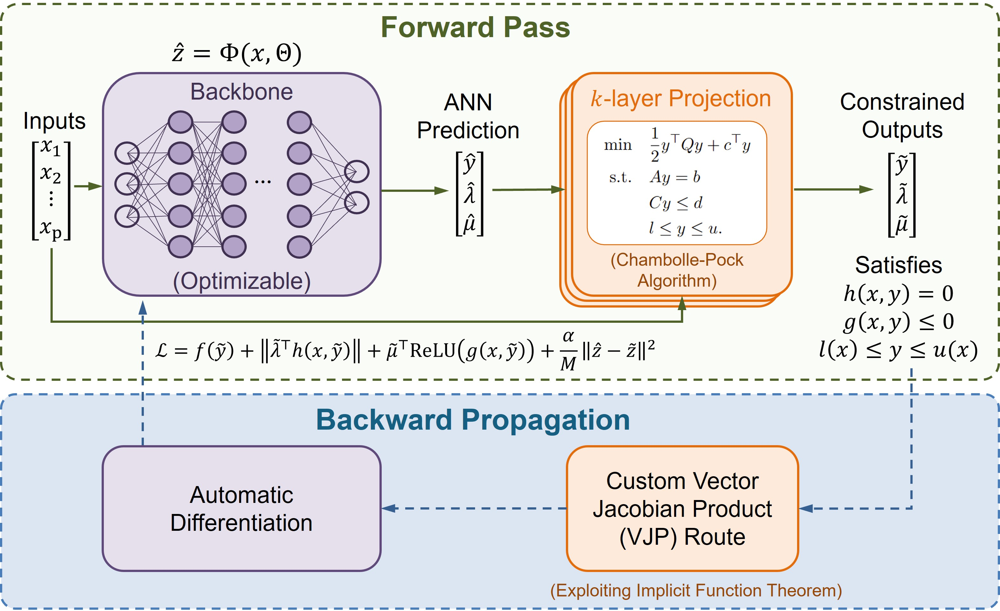
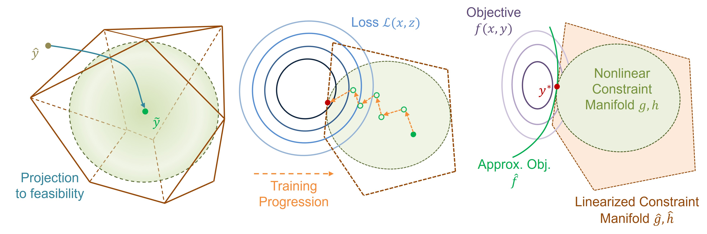
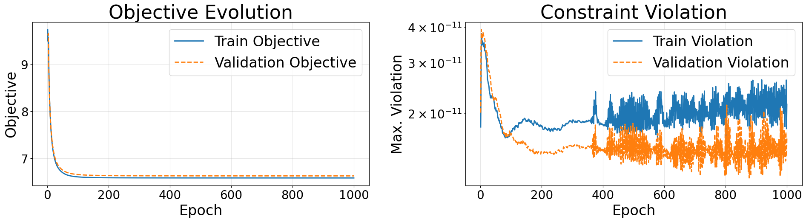

NLPOpt-Net
NonLinear Parametric Optimization Network (NLPOpt-Net) is a GPU supported python package for learning parameters to solution mappings for nonlinear parametric optimization problem.
{kind=link}

Figure 1: Overview of the NLPOpt-Net framework.
Installation
Currently, NLPOpt-Net requires Python 3.9 or later and supports installation for both CPU-only and GPU-accelerated environments.
CPU-only (Linux/macOS/Windows)
pip install nlpoptnet
GPU (NVIDIA, CUDA 12)
pip install "nlpoptnet[cuda12]"
Quick Overview
To give a quick understanding of what we are doing, we are trying to predict a solution (\(y\)) of the parameterized optimization problem,
for a given set of parameter (\(x\)). The core idea is to train a machine learning model in an unsupervised way and predict new solutions. For feasibility guarantee a projection layer is employed. Particularly, we approximate the original problem into a specific structure of quadratic program and solve that to retain feasibility. Graphically, the projection as training progresses would look like this:
{kind=link}

Figure 2: Graphical interpretation of the projection.
For a detailed idea, we refer readers to this article. Complete user documentation can be found here.
Core API
NLPOptNet(config=..., type=...)is the user-facing entry point.model.extract(problem.npz)loads structured matrices and exposes them as model attributes likemodel.Q,model.A,model.b, and so on.model.dataset(...),model.simplex(...), andmodel.box(...)define the parameter region.model.constraints.box.add(...)is separate from general inequalities so the bound constraints stay on the dedicated projection path.model.optimize()trains and returns a result dictionary withoutput_dir,metadata_path,summary, andhistory.model.load(metadata_path)restores a trained model, andmodel.predict(x_value)returns projected variable predictions.
General Workflow
The core ideas can be generalized in a workflow for training and inference tasks.
Model Creation and Training
Following is a general pseudocode for building and running a problem with NLPOpt-Net.
from nlpoptnet import NLPOptNet
CONFIG = {...}
model = NLPOptNet(config=CONFIG, name="problem_name")
x = model.add_parameter([...])
y = model.add_variable([...])
model.extract("path/to/problem_data")
model.objective(...)
model.constraints.equality.add(...)
model.constraints.inequality.add(...)
model.constraints.box.add(...)
model.dataset(parameters="path/to/parameters.csv")
model.build()
result = model.optimize()
run_dir = result["output_dir"]
Load and Use a Trained Model
After training, a saved model can be reloaded to inspect the run summary, visualize the training history, and make new predictions.
reloaded = NLPOptNet().load(metadata_path)
reloaded.summary()
reloaded.plot_history()
sample_pred = reloaded.predict(sample_x, projection_backend="backend/type/for/prediction")
Example
Following is an example of the summary and history plot for a trained model.
model.summary()
📊 NLPOptNet Summary
------------------------------------------------------------
Model Name : example_model
No. of Parameters : 50
No. of Variables : 100
No. of Equalities : 50
No. of Inequalities : 50
No. of Train Samples : 1000
No. of Validation Samples : 1000
Maximum Constraint Violation : 7.5433e-11
Training Time : 1518.25 s
Est. JAX Single Inference Time : 91.49 ms
Est. Native Single Inference Time : 1.99 ms
Est. JAX Batch Inference Time : 140.02 ms
------------------------------------------------------------
model.plot_history()
{kind=link}

Reporting a Bug or Error
We understand that running into issues can be frustrating. If you experience any errors while using NLPOpt-Net, please let us know so we can address them in future updates.
When reporting a bug, it is helpful to include:
A brief description of the issue
Relevant code snippets
Error messages or logs
Steps to reproduce the problem
Your feedback is greatly appreciated and helps us improve the package.
Citation
If you use this package in your work, please cite us using the Citations page.
User Guide
This section explains how to configure the package, define an optimization problem, specify the parameter space, and run training and inference workflows.
Configuration Options
The following configuration options are available in NLPOpt-Net:
Parameter |
Description |
Default Value |
Required |
|---|---|---|---|
|
Number of training epochs |
— |
Yes |
|
Number of samples per training batch |
— |
Yes |
|
Learning rate for optimizer |
— |
Yes |
|
Width of hidden layers in the neural network |
— |
Yes |
|
Number of hidden layers in the neural network |
— |
Yes |
|
Fraction of data used for training (rest for validation) |
0.8 |
No |
|
Random seed for reproducibility |
42 |
No |
|
Weight for consistency loss in training |
10.0 |
No |
|
Chambolle–Pock mode: |
|
No |
|
Number of iterations for CP projection solver |
500 |
No |
|
Tolerance for convergence of CP solver |
1e-9 |
No |
|
Safety factor for projection stability |
0.95 |
No |
|
Iterations for estimating operator norm (K-norm) |
25 |
No |
|
Seed for K-norm estimation |
42 |
No |
|
Iterations for implicit differentiation (adjoint solve) |
25 |
No |
|
Number of projection layers applied |
1 |
No |
|
Whether to apply Ruiz equilibration |
True |
No |
|
Number of Ruiz scaling iterations |
10 |
No |
|
Numerical precision ( |
|
No |
|
Frequency of printing training logs |
50 |
No |
|
Device to run on ( |
|
No |
|
Whether to print detailed logs |
True |
No |
NLPOpt-Net takes a dictionary input for configurations. Following is an example of defining the configuration options and creating a model object.
from nlpoptnet import NLPOptNet
CONFIG = {
'epochs': 1000,
'batch_size': 40,
'learning_rate': 1e-3,
'train_frac': 0.5,
'hidden_size': 64,
'hidden_layers': 2,
'seed': 42,
'alpha_consistency': 10.0,
'cp_mode': 'fixed',
'cp_iters': 300,
'cp_tol': 1e-09,
'safety': 0.95,
'knorm_iters': 15,
'knorm_seed': 42,
'adjoint_iters': 20,
'k_layer': 1,
'use_ruiz': True,
'ruiz_iters': 5,
'dtype': 'float64',
'print_every': 100,
'device': 'auto',
'verbose': True,
}
model = NLPOptNet(config=CONFIG, type='qp', name='Example_QP_Model')
Here, the CONFIG dictionary defines the configuration of the model.
Users must provide all required configuration options. For optional
parameters, if not specified, default values will be used.
The type argument is used for reference and bookkeeping purposes
only and does not affect any computational procedure. Users may set
it to None; however, it is recommended to specify the problem type
for better experiment tracking and reproducibility. The allowed values
are qp, qcqp, nlp, nonconvex, or None.
The name argument is used to assign a custom name to the model,
which is also used for naming the output directory where results
are saved. The naming behavior is as follows:
If
nameis provided → output directory usesnameElse if
typeis provided → output directory usestypeElse → output directory defaults to
nlpoptnet
The output directory is named using the pattern:
<model_name>_<date>_<time>
where:
model_nameis determined by thenameortypeargumentdateandtimeare automatically generated timestamps
For example:
Example_QP_Model_20260423_104512qp_20260423_104512nlpoptnet_20260423_104512
Defining the Problem
This notebook provides the way of defining the model in NLPOpt-Net. You can define block of constraints when you have exploitable structure and also can define explicit constraitns. Along with objective and constraints this notebook provides the method of defining variable bounds that can be parameter independent or parameter dependent. We consider the general form of the problem as follows:
The general workflow for defining a model in NLPOpt-Net is as follows:
Configure training settings
Create a
NLPOptNetobjectDefine the variables and parameters
Define the objective, constraints, variable bounds
Define parameter space
Build the model
Train and infer
Creating the Model Object
Ensure that all required configuration fields are provided. Optional parameters can be specified based on user preference. In this example we only provide the required configuration fields.
from nlpoptnet import NLPOptNet
CONFIG = {
'epochs': 1000,
'batch_size': 40,
'learning_rate': 1e-3,
'hidden_size': 64,
'hidden_layers': 2
}
model = NLPOptNet(config=CONFIG, type=None, name='Example_Model')
Defining the Variables and Parameters
You can define the parameter and variable names explicitly or by providing a list of strings.
parameter_set = model.add_parameter([parameter_1, parameter_2, ...])
parameter_set: handle to the defined parametersparameter_i: user-defined string identifiers (e.g.,"temperature","pressure","x1",…)
variable_set = model.add_variable([variable_1, variable_2, ...])
variable_set: handle to the defined variablesvariable_i: user-defined string identifiers (e.g.,"flow","y1", …)
It is convenient to define explicitely when system has few parameters and variables.
x = model.add_parameter(['x1', 'x2'])
y = model.add_variable(['y1', 'y2', 'y3', 'y4'])
For a large number of parameters and variables you may consider the following:
no_of_parameters = 50
no_of_variables = 100
parameter_names = [f'x{i+1}' for i in range(no_of_parameters)]
variable_names = [f'y{i+1}' for i in range(no_of_variables)]
x = model.add_parameter(parameter_names)
y = model.add_variable(variable_names)
Extracting Model Constants from Previously Saved Files
Currently we support loading arrays from a .npz file. The model will automatically resgister the contained arrays as model constants.
model.extract(DATA_DIRECTORY / 'problem.npz')
This will load all arrays stored in problem.npz. The following is an example of the output:
Loaded problem constants: [‘A’, ‘B’, ‘C’, ‘L’, ‘Q’, ‘U’, ‘b’, ‘c’, ‘d’, ‘l’, ‘u’]
User can use them by calling model.A, model.B, …
Defining Model Constants Directly
Model constants (arrays) can be added directly using the provided APIs. The following examples illustrate how to define matrices, vectors, and tensors:
# Matrix (2D array)
model.Q = model.matrix([[1.0, 0.0], [0.0, 1.0]])
model.A = model.matrix([[1.0, 0.0], [0.0, 1.0]])
# Vector (1D array)
model.c = model.vector([1.0, 2.0])
# Tensor (multi-dimensional array)
model.T = model.tensor([
[[1.0, 0.0], [0.0, 1.0]],
[[2.0, 0.0], [0.0, 2.0]]
])
Model constants can be accessed directly as attributes (e.g., model.Q). To view their values, use model.Q.value or convert to a NumPy array using np.array(model.Q).
Defining the Objective
The objective can be defined using built-in structured functions or explicitly using expressions. NLPOpt-Net provides several built-in functions to construct structured objectives:
# Matrix operations
model.lin(model.A, y) # Linear: A @ y
model.quad(model.Q, y) # Quadratic: y^T Q y
model.batch_lin(model.A, y) # Batched linear mapping
model.batch_quad(model.Q, y) # Batched quadratic form
# Elementwise nonlinear functions
model.sin(expr) # Sine
model.cos(expr) # Cosine
model.exp(expr) # Exponential
model.log(expr) # Logarithm
model.sqrt(expr) # Square root
model.abs(expr) # Absolute value
# Quadratic objective function
model.objective(0.5 * model.quad(model.Q, y) + model.lin(model.c, y))
# Nonlinear bbjective function
model.objective(0.5 * model.quad(model.Q, y) # 0.5 y^T Q y
+ model.lin(model.c, y) # c^T y
+ model.lin(model.p, model.exp(y)) # p^T exp(y)
)
# Explicit expression
model.objective(0.5 * (y[0]*y[0] + y[1]*y[1]) + 2*y[0] + 3*y[1] + 1*model.exp(y[0]) + 2*model.exp(y[1]))
Note that parameters can also be included in the objective in similar way.
Defining Constraints
Similar to the objective, constraints can be defined using structured functions or explicit expressions.
# Linear constraints
model.constraints.equality.add(model.lin(model.A, y) == model.b + model.lin(model.B, x))
model.constraints.inequality.add(model.lin(model.C, y) <= model.d + model.lin(model.D, x))
# Quadratic constraints
model.constraints.inequality.add(model.batch_quad(model.C, y) + model.batch_lin(model.d, y) <= model.e + model.batch_lin(model.E, x))
# Nonlinear constraints
model.constraints.inequality.add(model.batch_quad(model.C, y) + model.batch_lin(model.d, y) <= model.e + model.batch_lin(model.E, x))
# Explicit expression as constraints
model.constraints.equality.add(y.y1 + y.y2 == x.x1,
y.y2 - y.y3 == x.x2)
model.constraints.inequality.add(y.y1 ** 2 + y.y3 ** 2 <= 2.0,
y.y1 + 0.5 * y.y2 <= 1.5)
Defining Box/Bounding Constraints
Box constraints define lower and upper bounds on the decision variables. Bounds may be parameterized or some decision variable may be unbounded.
# Parameterized bounds
model.constraints.box.add(var=y,
lower=model.l + model.lin(model.L, x),
upper=model.u + model.lin(model.U, x))
# Non-parameterized bounds
model.constraints.box.add(var=y, lower=model.l, upper=model.u)
If only a lower or upper bound is available, provide only that bound. If a variable has no lower or upper bound, leave it unbounded by not specifying a bound for that variable. For vector bounds, use None, -np.inf, or np.inf depending on how the bound data is represented. If the variables are unbounded do not call .constraints.box.add.
# Lower bound only
model.constraints.box.add(var=y, lower=model.l)
# Upper bound only
model.constraints.box.add(var=y,upper=model.u)
# Example: y[0] has bounds, y[1] is unbounded
l = np.array([0.0, -np.inf])
u = np.array([1.0, np.inf])
After defining the objective, constraints, and bounds, the next step is to specify the parameter space.
Defining Parameter Space
The user must specify the parameter space from which training samples are drawn. NLPOpt-Net supports multiple ways to define this space.
CSV-based dataset
Users can explicitly provide parameter samples via a
.csvfile.Each row corresponds to one sample of the parameter vector.
This is the most flexible option when sampling data is already available.
Box-constrained space
Users can define a box (hyper-rectangle) for the parameters.
x_lowerandx_uppercan be scalars or vectors.Sampling is performed uniformly within the box.
Simplex / Polytope space
Users can define a simplex or general polytope region.
The space can be defined:
using structured constraints, or
using matrix form: \(M x \leq 1\).
Useful for constrained parameter spaces (e.g., probabilities, resource allocation).
Samples are generated within the feasible region.
Using a .csv file
User needs to provide a valid path to read the .csv file.
model.dataset(parameters="path/to/parameters.csv")
Number of columns in the CSV must match the number of parameters defined
Order of columns should be consistent with the parameter definition
Box-Constrained Parameter Space
User needs to provide both lower and upper bounds for all the parameters. User can provide a vector with different bounds for each parameter or a scalar as the same bound for all parameters.
model.box(lower=x_lower, upper=x_upper, num_samples = 500)
Defining a Simplex
A simplex is a \(d\)-dimensional polytope defined by linear constraints of the form:
More generally, a simplex can be represented as:
model.simplex(M=M_matrix, num_samples=500)
Defining a Polytope Explicitly
Although the method is named simplex, it supports general convex polytopes defined by linear inequalities. For example, to define the following polytope:
model.simplex(x.x1 >= 0.0, x.x2 >= 0.0, x.x3 >= 0.0,
x.x1 + x.x2 + x.x3 <= 1.0, x.x1 + 2.0 * x.x2 <= 0.8,
0.5 * x.x2 + x.x3 <= 0.6, x.x1 + 0.5 * x.x3 >= 0.2, num_samples=500)
The argument num_samples specifies the number of parameter samples to be generated from the defined polytope region. These sampled parameter points are used to construct the dataset for training and validation of the model.
The total number of generated samples is equal to
num_samplesThe samples are split into training and validation sets based on
train_fracEach sample corresponds to one instance of the parametric optimization problem
If num_samples is not provided, a default value (typically 1000) is used.
Note
Only one parameter space definition is required.
If multiple are provided, the most recent call will overwrite the previous definition.
The number of samples can be controlled via the configuration (e.g.,
num_samples).
Note
The user must define a parameter space for which the optimization problem is feasible. Currently, NLPOpt-Net does not automatically detect infeasibility for parameter realizations. Providing infeasible samples may lead to invalid training behavior or poor model performance.
Training and Inference
After defining the problem and configuration, the model can be built, trained, and used for inference as shown below.
Build and Train
model.build()constructs the symbolic model, prepares the dataset, and initializes the training pipeline.model.optimize()trains the model and saves all artifacts, including model weights, history, summary, and metadata, to a timestamped directory.run_dirpoints to the directory where results are stored.
model.build()
result = model.optimize()
run_dir = Path(result['output_dir'])
print('run_dir =', run_dir)
Model Summary and Training History Visualization
summary() function prints a summary after the model is trained. It includes the model name, the size of the model, number of samples considered during training, training time, maximum constraint violation and an estimation of inference times.
model.summary()
Note
Inference time estimations are based on microbenchmarking on the training hardware and may vary across different hardware and runtime conditions.
The plot_history() function generates a plot showing the training behavior of the model. The plot includes:
Objective evolution for training and validation samples.
Constraint violation over epochs, typically shown on a logarithmic scale.
model.plot_history()
After training, NLPOpt-Net automatically saves all relevant files inside the output directory:
<model_name>_<YYYYMMDD>_<HHMMSS>/
The following files are generated:
metadata.json— Stores the complete model configuration, problem definition, architecture details, and references to all saved files. This file is used to reload the trained model.summary.json— Contains aggregated training statistics such as final loss, objective values, constraint violations, dataset sizes, training time, and estimated inference times.history.csv— Stores per-epoch training history including training/validation loss, objective values, and constraint violations. This file is used for visualization viaplot_history().parameters.csv— Contains sampled parameter inputs \(x\) used for training and validation.predicted_variables.csv— Contains the corresponding predicted decision variables \(y\) from the trained model.model_weights.npz— Stores the full trained model weights, including both backbone and projection-related parameters.backbone_weights.npz— Stores only the neural network (backbone) weights.problem.npz— Encodes the optimization problem structure (e.g., matrices, coefficients).problem_constants.npz— Stores constant components of the problem for efficient reuse during inference.projection_native.json— Contains metadata describing the compiled native projection backend, including platform-specific shared libraries stored inside the saved run folder.
Reloading the Model
After training, the model can be reloaded from the saved metadata.json file.
from nlpoptnet import NLPOptNet
reloaded = NLPOptNet().load('path/to/metadata.json')
The load(...) function restores the trained model, including the configuration, learned weights, problem definition, and available inference backends from the saved run directory. A parameter sample can then be provided to the trained model to compute the corresponding prediction. NLPOpt-Net supports two projection backends during inference.
sample_pred_native = reloaded.predict(sample_x, projection_backend='native')
sample_pred_jax = reloaded.predict(sample_x, projection_backend='jax')
jax— Uses the JAX-based implementation of the projection layer. This backend is fully portable and supports efficient batch inference.native— Uses a compiled native (C-based) implementation of the projection layer. This backend is optimized for fast single-sample inference and is recommended for deployment.
Note
To use the native backend, a C compiler must be installed on the system. The saved run keeps native binaries under its own native_projection/ folder, and if a model is reloaded on a different supported OS/architecture, NLPOpt-Net will compile a matching native binary for the current system into that same run directory.
Examples
This section provides synthetic examples showing how to formulate and solve quadratic programs, quadratically constrained quadratic programs, and nonlinear programs using the package.
Quadratic Programs (QPs)
Consider the following QP problem:
where, \(Q\in\mathbb{R}^{n\times n}\succeq0\), \(c\in\mathbb{R}^n\), \(A\in\mathbb{R}^{n_\textrm{eq}\times n}\), \(b\in\mathbb{R}^{n_\textrm{eq}}\), \(B\in\mathbb{R}^{n_\textrm{eq}\times p}\), \(C\in\mathbb{R}^{n_\textrm{ineq}\times n}\), \(d\in\mathbb{R}^{n_\textrm{ineq}}\), \(l\in\mathbb{R}^n\), \(L\in\mathbb{R}^{n\times p}\), \(u\in\mathbb{R}^n\), and \(U\in\mathbb{R}^{n\times p}\). The goal is to find optimal \(y\in\mathbb{R}^n\) for different parameter realizations \(x\in\mathbb{R}^p\). For this example consider, \(n=10, p=5,n_\textrm{eq}=5,n_\textrm{ineq}=5\).
Import Libraries
import numpy as np
import pandas as pd
from nlpoptnet import NLPOptNet
Set configuration and Create the model object
CONFIG = {
'epochs': 100,
'batch_size': 32,
'learning_rate': 1e-3,
'train_frac': 0.8,
'hidden_size': 64,
'hidden_layers': 2,
'seed': 42,
'alpha_consistency': 10.0,
'cp_mode': 'fixed',
'cp_iters': 300,
'cp_tol': 1e-9,
'safety': 0.95,
'knorm_iters': 15,
'knorm_seed': 42,
'adjoint_iters': 20,
'k_layer': 1,
'use_ruiz': True,
'ruiz_iters': 5,
'dtype': 'float64',
'print_every': 10,
'device': 'auto',
'verbose': True,
}
model = NLPOptNet(config=CONFIG, type='qp', name='Example_QP')
x = model.add_parameter([f'x{i+1}' for i in range(5)])
y = model.add_variable([f'y{i+1}' for i in range(10)])
Define the problem constants
Q = np.array([[2.1, 0.1, 0.0, 0.05, 0.0, 0.02, 0.0, 0.0, 0.0, 0.0],
[0.1, 2.0, 0.08, 0.0, 0.03, 0.0, 0.02, 0.0, 0.0, 0.0],
[0.0, 0.08, 1.9, 0.07, 0.0, 0.0, 0.0, 0.02, 0.0, 0.0],
[0.05, 0.0, 0.07, 2.2, 0.06, 0.0, 0.0, 0.0, 0.02, 0.0],
[0.0, 0.03, 0.0, 0.06, 2.05, 0.0, 0.0, 0.0, 0.0, 0.02],
[0.02, 0.0, 0.0, 0.0, 0.0, 1.8, 0.05, 0.0, 0.0, 0.0],
[0.0, 0.02, 0.0, 0.0, 0.0, 0.05, 1.85, 0.04, 0.0, 0.0],
[0.0, 0.0, 0.02, 0.0, 0.0, 0.0, 0.04, 1.95, 0.03, 0.0],
[0.0, 0.0, 0.0, 0.02, 0.0, 0.0, 0.0, 0.03, 1.75, 0.04],
[0.0, 0.0, 0.0, 0.0, 0.02, 0.0, 0.0, 0.0, 0.04, 1.88]],dtype=float)
c = np.array([0.65, 0.75, 0.85, 0.95, 1.05, 0.55, 0.7, 0.9, 1.1, 1.2], dtype=float)
A = np.array([[1.0, 0.0, 0.0, 0.0, 0.0, 0.2, -0.1, 0.0, 0.05, 0.0],
[0.0, 1.0, 0.0, 0.0, 0.0, 0.0, 0.15, -0.05, 0.0, 0.1],
[0.0, 0.0, 1.0, 0.0, 0.0, -0.1, 0.0, 0.1, 0.05, 0.0],
[0.0, 0.0, 0.0, 1.0, 0.0, 0.05, 0.0, 0.0, -0.1, 0.15],
[0.0, 0.0, 0.0, 0.0, 1.0, 0.0, -0.05, 0.1, 0.0, -0.1]], dtype=float)
b = np.array([0.28, -0.1915, 0.083, -0.0175, 0.1455], dtype=float)
B = np.array([[0.0905, 0.027, -0.01, 0.0035, 0.0275],
[-0.02, 0.073, 0.0235, -0.0095, -0.001],
[0.0145, -0.028, 0.087, 0.0155, -0.0175],
[-0.0075, 0.0235, -0.022, 0.078, 0.0005],
[0.032, 0.0035, 0.0055, -0.02, 0.083]], dtype=float)
C = np.array([[0.4, -0.2, 0.0, 0.1, 0.0, 0.0, 0.2, 0.0, 0.0, -0.1],
[-0.1, 0.3, 0.2, 0.0, 0.0, 0.1, 0.0, -0.2, 0.0, 0.0],
[0.0, 0.1, -0.3, 0.2, 0.1, 0.0, 0.0, 0.0, 0.2, 0.0],
[0.2, 0.0, 0.0, -0.2, 0.3, -0.1, 0.0, 0.0, 0.0, 0.1],
[0.0, -0.1, 0.1, 0.0, -0.2, 0.2, -0.1, 0.3, 0.0, 0.0]], dtype=float)
d = np.array([0.656, 0.521, 0.509, 0.644, 0.704], dtype=float)
l = np.array([-1.05, -1.4, -1.15, -1.3, -1.13, -0.95, -1.5, -1.07, -1.35, -1.2], dtype=float)
L = np.array([[0.1, 0.02, -0.01, 0.0, 0.03],
[-0.02, 0.08, 0.02, -0.01, 0.0],
[0.01, -0.03, 0.09, 0.02, -0.02],
[0.0, 0.02, -0.02, 0.07, 0.01],
[0.03, 0.0, 0.01, -0.02, 0.08],
[-0.04, 0.01, 0.0, 0.03, -0.01],
[0.02, -0.05, 0.01, 0.0, 0.02],
[0.0, 0.03, -0.04, 0.01, 0.0],
[0.01, 0.0, 0.02, -0.05, 0.03],
[-0.03, 0.02, 0.0, 0.01, -0.04]], dtype=float)
u = np.array([1.45, 1.1, 1.35, 1.2, 1.37, 1.55, 1.0, 1.43, 1.15, 1.3], dtype=float)
U = np.array([[0.1, 0.02, -0.01, 0.0, 0.03],
[-0.02, 0.08, 0.02, -0.01, 0.0],
[0.01, -0.03, 0.09, 0.02, -0.02],
[0.0, 0.02, -0.02, 0.07, 0.01],
[0.03, 0.0, 0.01, -0.02, 0.08],
[-0.04, 0.01, 0.0, 0.03, -0.01],
[0.02, -0.05, 0.01, 0.0, 0.02],
[0.0, 0.03, -0.04, 0.01, 0.0],
[0.01, 0.0, 0.02, -0.05, 0.03],
[-0.03, 0.02, 0.0, 0.01, -0.04]], dtype=float)
model.Q = model.matrix(Q)
model.c = model.vector(c)
model.A = model.matrix(A)
model.b = model.vector(b)
model.B = model.matrix(B)
model.C = model.matrix(C)
model.d = model.vector(d)
model.l = model.vector(l)
model.L = model.matrix(L)
model.u = model.vector(u)
model.U = model.matrix(U)
Define the objective, constraints, and the parameter sample space
model.objective(0.5 * model.quad(model.Q, y) + model.lin(model.c, y))
model.constraints.equality.add(model.lin(model.A, y) == model.b + model.lin(model.B, x))
model.constraints.inequality.add(model.lin(model.C, y) <= model.d)
model.constraints.box.add(var=y, lower=model.l + model.lin(model.L, x), upper=model.u + model.lin(model.U, x))
model.box(lower=np.array([-1.0]*5), upper=np.array([1.0]*5), num_samples=200)
Build, train and use the model
model.build()
result = model.optimize()
run_dir = result['output_dir']
print('run_dir =', run_dir)
model.summary()
model.plot_history()
X_test = np.array([
[ 0.00, 0.00, 0.00, 0.00, 0.00],
[ 0.50, -0.25, 0.75, -0.50, 0.25],
[-0.80, 0.40, -0.20, 0.60, -0.10],
], dtype=float)
pred = model.predict(X_test, projection_backend='jax')
print('predicted y shape:', np.asarray(pred).shape)
pd.DataFrame(np.asarray(pred), columns=[f'y{i+1}' for i in range(10)])
Quadratically Constrained Quadratic Programs (QCQPs)
Consider the following QCQP problem:
where, \(Q \in \mathbb{R}^{n \times n} \succeq 0\), \(c \in \mathbb{R}^n\), \(A \in \mathbb{R}^{n_{\mathrm{eq}} \times n}\), \(b \in \mathbb{R}^{n_{\mathrm{eq}}}\), \(B \in \mathbb{R}^{n_{\mathrm{eq}} \times p }\), \(C_i \in \mathbb{R}^{n \times n} \succeq 0\), \(d_i \in \mathbb{R}^n\), \(\beta_i \in \mathbb{R}\), \(E_i \in \mathbb{R}^{1 \times p}\) for \(i = 1, 2, \ldots, n_{\mathrm{ineq}}\), \(l \in \mathbb{R}^n\), \(L \in \mathbb{R}^{n \times p}\), \(u \in \mathbb{R}^n\), and \(U \in \mathbb{R}^{n \times p}\). We must learn to approximate the optimal solution \(y \in \mathbb{R}^n\) given a parameter realization \(x \in \mathbb{R}^p\). For this example consider, \(n=10, p=5,n_\textrm{eq}=5,n_\textrm{ineq}=5\).
Import Libraries
import numpy as np
import pandas as pd
from nlpoptnet import NLPOptNet
Set configuration and Create the model object
CONFIG = {
'epochs': 100,
'batch_size': 32,
'learning_rate': 1e-3,
'train_frac': 0.8,
'hidden_size': 64,
'hidden_layers': 2,
'seed': 42,
'alpha_consistency': 10.0,
'cp_mode': 'fixed',
'cp_iters': 300,
'cp_tol': 1e-9,
'safety': 0.95,
'knorm_iters': 15,
'knorm_seed': 42,
'adjoint_iters': 20,
'k_layer': 3,
'use_ruiz': True,
'ruiz_iters': 5,
'dtype': 'float64',
'print_every': 10,
'device': 'auto',
'verbose': True,
}
model = NLPOptNet(config=CONFIG, type='qcqp', name='Example_QCQP')
x = model.add_parameter([f'x{i+1}' for i in range(5)])
y = model.add_variable([f'y{i+1}' for i in range(10)])
Define the problem constants
Q = np.array([[2.1, 0.1, 0.0, 0.05, 0.0, 0.02, 0.0, 0.0, 0.0, 0.0],
[0.1, 2.0, 0.08, 0.0, 0.03, 0.0, 0.02, 0.0, 0.0, 0.0],
[0.0, 0.08, 1.9, 0.07, 0.0, 0.0, 0.0, 0.02, 0.0, 0.0],
[0.05, 0.0, 0.07, 2.2, 0.06, 0.0, 0.0, 0.0, 0.02, 0.0],
[0.0, 0.03, 0.0, 0.06, 2.05, 0.0, 0.0, 0.0, 0.0, 0.02],
[0.02, 0.0, 0.0, 0.0, 0.0, 1.8, 0.05, 0.0, 0.0, 0.0],
[0.0, 0.02, 0.0, 0.0, 0.0, 0.05, 1.85, 0.04, 0.0, 0.0],
[0.0, 0.0, 0.02, 0.0, 0.0, 0.0, 0.04, 1.95, 0.03, 0.0],
[0.0, 0.0, 0.0, 0.02, 0.0, 0.0, 0.0, 0.03, 1.75, 0.04],
[0.0, 0.0, 0.0, 0.0, 0.02, 0.0, 0.0, 0.0, 0.04, 1.88]], dtype=float)
c = np.array([0.65, 0.75, 0.85, 0.95, 1.05, 0.55, 0.7, 0.9, 1.1, 1.2], dtype=float)
A = np.array([[1.0, 0.0, 0.0, 0.0, 0.0, 0.2, -0.1, 0.0, 0.05, 0.0],
[0.0, 1.0, 0.0, 0.0, 0.0, 0.0, 0.15, -0.05, 0.0, 0.1],
[0.0, 0.0, 1.0, 0.0, 0.0, -0.1, 0.0, 0.1, 0.05, 0.0],
[0.0, 0.0, 0.0, 1.0, 0.0, 0.05, 0.0, 0.0, -0.1, 0.15],
[0.0, 0.0, 0.0, 0.0, 1.0, 0.0, -0.05, 0.1, 0.0, -0.1]], dtype=float)
b = np.array([0.28, -0.1915, 0.083, -0.0175, 0.1455], dtype=float)
B = np.array([[0.0905, 0.027, -0.01, 0.0035, 0.0275],
[-0.02, 0.073, 0.0235, -0.0095, -0.001],
[0.0145, -0.028, 0.087, 0.0155, -0.0175],
[-0.0075, 0.0235, -0.022, 0.078, 0.0005],
[0.032, 0.0035, 0.0055, -0.02, 0.083]], dtype=float)
Cq = np.array([[[0.036, -0.012, 0.024, 0.0, 0.0, 0.012, 0.0, -0.024, 0.0, 0.012],
[-0.012, 0.004, -0.008, -0.0, -0.0, -0.004, -0.0, 0.008, -0.0, -0.004],
[0.024, -0.008, 0.016, 0.0, 0.0, 0.008, 0.0, -0.016, 0.0, 0.008],
[0.0, -0.0, 0.0, 0.0, 0.0, 0.0, 0.0, -0.0, 0.0, 0.0],
[0.0, -0.0, 0.0, 0.0, 0.0, 0.0, 0.0, -0.0, 0.0, 0.0],
[0.012, -0.004, 0.008, 0.0, 0.0, 0.004, 0.0, -0.008, 0.0, 0.004],
[0.0, -0.0, 0.0, 0.0, 0.0, 0.0, 0.0, -0.0, 0.0, 0.0],
[-0.024, 0.008, -0.016, -0.0, -0.0, -0.008, -0.0, 0.016, -0.0, -0.008],
[0.0, -0.0, 0.0, 0.0, 0.0, 0.0, 0.0, -0.0, 0.0, 0.0],
[0.012, -0.004, 0.008, 0.0, 0.0, 0.004, 0.0, -0.008, 0.0, 0.004]],
[[0.012, -0.015, -0.0, -0.009, -0.0, -0.0, -0.006, -0.0, 0.009, -0.0],
[-0.015, 0.01875, 0.0, 0.01125, 0.0, 0.0, 0.0075, 0.0, -0.01125, 0.0],
[-0.0, 0.0, 0.0, 0.0, 0.0, 0.0, 0.0, 0.0, -0.0, 0.0],
[-0.009, 0.01125, 0.0, 0.00675, 0.0, 0.0, 0.0045, 0.0, -0.00675, 0.0],
[-0.0, 0.0, 0.0, 0.0, 0.0, 0.0, 0.0, 0.0, -0.0, 0.0],
[-0.0, 0.0, 0.0, 0.0, 0.0, 0.0, 0.0, 0.0, -0.0, 0.0],
[-0.006, 0.0075, 0.0, 0.0045, 0.0, 0.0, 0.003, 0.0, -0.0045, 0.0],
[-0.0, 0.0, 0.0, 0.0, 0.0, 0.0, 0.0, 0.0, -0.0, 0.0],
[0.009, -0.01125, -0.0, -0.00675, -0.0, -0.0, -0.0045, -0.0, 0.00675, -0.0],
[-0.0, 0.0, 0.0, 0.0, 0.0, 0.0, 0.0, 0.0, -0.0, 0.0]],
[[0.0, 0.0, -0.0, 0.0, 0.0, -0.0, 0.0, 0.0, 0.0, 0.0],
[0.0, 0.014, -0.0175, 0.0, 0.0105, -0.007, 0.0, 0.007, 0.0, 0.0],
[-0.0, -0.0175, 0.021875, -0.0, -0.013125, 0.00875, -0.0, -0.00875, -0.0, -0.0],
[0.0, 0.0, -0.0, 0.0, 0.0, -0.0, 0.0, 0.0, 0.0, 0.0],
[0.0, 0.0105, -0.013125, 0.0, 0.007875, -0.00525, 0.0, 0.00525, 0.0, 0.0],
[-0.0, -0.007, 0.00875, -0.0, -0.00525, 0.0035, -0.0, -0.0035, -0.0, -0.0],
[0.0, 0.0, -0.0, 0.0, 0.0, -0.0, 0.0, 0.0, 0.0, 0.0],
[0.0, 0.007, -0.00875, 0.0, 0.00525, -0.0035, 0.0, 0.0035, 0.0, 0.0],
[0.0, 0.0, -0.0, 0.0, 0.0, -0.0, 0.0, 0.0, 0.0, 0.0],
[0.0, 0.0, -0.0, 0.0, 0.0, -0.0, 0.0, 0.0, 0.0, 0.0]],
[[0.0025, 0.0, 0.0, -0.0075, 0.005, 0.0, -0.0025, 0.0, 0.00375, 0.0],
[0.0, 0.0, 0.0, -0.0, 0.0, 0.0, -0.0, 0.0, 0.0, 0.0],
[0.0, 0.0, 0.0, -0.0, 0.0, 0.0, -0.0, 0.0, 0.0, 0.0],
[-0.0075, -0.0, -0.0, 0.0225, -0.015, -0.0, 0.0075, -0.0, -0.01125, -0.0],
[0.005, 0.0, 0.0, -0.015, 0.01, 0.0, -0.005, 0.0, 0.0075, 0.0],
[0.0, 0.0, 0.0, -0.0, 0.0, 0.0, -0.0, 0.0, 0.0, 0.0],
[-0.0025, -0.0, -0.0, 0.0075, -0.005, -0.0, 0.0025, -0.0, -0.00375, -0.0],
[0.0, 0.0, 0.0, -0.0, 0.0, 0.0, -0.0, 0.0, 0.0, 0.0],
[0.00375, 0.0, 0.0, -0.01125, 0.0075, 0.0, -0.00375, 0.0, 0.005625, 0.0],
[0.0, 0.0, 0.0, -0.0, 0.0, 0.0, -0.0, 0.0, 0.0, 0.0]],
[[0.0, -0.0, 0.0, 0.0, -0.0, 0.0, 0.0, 0.0, 0.0, 0.0],
[-0.0, 0.010125, -0.00675, -0.0, 0.016875, -0.0135, -0.0, -0.0, -0.0, -0.00675],
[0.0, -0.00675, 0.0045, 0.0, -0.01125, 0.009, 0.0, 0.0, 0.0, 0.0045],
[0.0, -0.0, 0.0, 0.0, -0.0, 0.0, 0.0, 0.0, 0.0, 0.0],
[-0.0, 0.016875, -0.01125, -0.0, 0.028125, -0.0225, -0.0, -0.0, -0.0, -0.01125],
[0.0, -0.0135, 0.009, 0.0, -0.0225, 0.018, 0.0, 0.0, 0.0, 0.009],
[0.0, -0.0, 0.0, 0.0, -0.0, 0.0, 0.0, 0.0, 0.0, 0.0],
[0.0, -0.0, 0.0, 0.0, -0.0, 0.0, 0.0, 0.0, 0.0, 0.0],
[0.0, -0.0, 0.0, 0.0, -0.0, 0.0, 0.0, 0.0, 0.0, 0.0],
[0.0, -0.00675, 0.0045, 0.0, -0.01125, 0.009, 0.0, 0.0, 0.0, 0.0045]]], dtype=float)
dq = np.array([[0.3, -0.1, 0.2, 0.0, 0.0, 0.1, 0.0, -0.2, 0.0, 0.1],
[-0.2, 0.25, 0.0, 0.15, 0.0, 0.0, 0.1, 0.0, -0.15, 0.0],
[0.0, 0.2, -0.25, 0.0, 0.15, -0.1, 0.0, 0.1, 0.0, 0.0],
[0.1, 0.0, 0.0, -0.3, 0.2, 0.0, -0.1, 0.0, 0.15, 0.0],
[0.0, -0.15, 0.1, 0.0, -0.25, 0.2, 0.0, 0.0, 0.0, 0.1]], dtype=float)
beta = np.array([0.77196, 0.5338252, 0.57396509, 0.64450756, 0.6942592], dtype=float)
E = np.array([[0.1, -0.05, 0.0, 0.03, 0.02],
[-0.02, 0.08, 0.04, 0.0, -0.01],
[0.0, 0.03, -0.07, 0.05, 0.02],
[0.04, 0.0, 0.02, -0.06, 0.03],
[-0.03, 0.02, 0.0, 0.04, -0.08]], dtype=float)
l = np.array([-1.05, -1.4, -1.15, -1.3, -1.13, -0.95, -1.5, -1.07, -1.35, -1.2], dtype=float)
L = np.array([[0.1, 0.02, -0.01, 0.0, 0.03],
[-0.02, 0.08, 0.02, -0.01, 0.0],
[0.01, -0.03, 0.09, 0.02, -0.02],
[0.0, 0.02, -0.02, 0.07, 0.01],
[0.03, 0.0, 0.01, -0.02, 0.08],
[-0.04, 0.01, 0.0, 0.03, -0.01],
[0.02, -0.05, 0.01, 0.0, 0.02],
[0.0, 0.03, -0.04, 0.01, 0.0],
[0.01, 0.0, 0.02, -0.05, 0.03],
[-0.03, 0.02, 0.0, 0.01, -0.04]], dtype=float)
u = np.array([1.45, 1.1, 1.35, 1.2, 1.37, 1.55, 1.0, 1.43, 1.15, 1.3], dtype=float)
U = np.array([[0.1, 0.02, -0.01, 0.0, 0.03],
[-0.02, 0.08, 0.02, -0.01, 0.0],
[0.01, -0.03, 0.09, 0.02, -0.02],
[0.0, 0.02, -0.02, 0.07, 0.01],
[0.03, 0.0, 0.01, -0.02, 0.08],
[-0.04, 0.01, 0.0, 0.03, -0.01],
[0.02, -0.05, 0.01, 0.0, 0.02],
[0.0, 0.03, -0.04, 0.01, 0.0],
[0.01, 0.0, 0.02, -0.05, 0.03],
[-0.03, 0.02, 0.0, 0.01, -0.04]], dtype=float)
model.Q = model.matrix(Q)
model.c = model.vector(c)
model.A = model.matrix(A)
model.b = model.vector(b)
model.B = model.matrix(B)
model.Cq = model.tensor(Cq)
model.dq = model.matrix(dq)
model.beta = model.vector(beta)
model.E = model.matrix(E)
model.l = model.vector(l)
model.L = model.matrix(L)
model.u = model.vector(u)
model.U = model.matrix(U)
Define the objective, constraints, and the parameter sample space
model.objective(0.5 * model.quad(model.Q, y) + model.lin(model.c, y))
model.constraints.equality.add(model.lin(model.A, y) == model.b + model.lin(model.B, x))
model.constraints.inequality.add(model.batch_quad(model.Cq, y) + model.batch_lin(model.dq, y) <= model.beta + model.batch_lin(model.E, x))
model.constraints.box.add(var=y, lower=model.l + model.lin(model.L, x), upper=model.u + model.lin(model.U, x))
model.box(lower=np.array([-1.0]*5), upper=np.array([1.0]*5), num_samples=200)
Build, train and use the model
model.build()
result = model.optimize()
run_dir = result['output_dir']
print('run_dir =', run_dir)
model.summary()
model.plot_history()
X_test = np.array([
[ 0.00, 0.00, 0.00, 0.00, 0.00],
[ 0.50, -0.25, 0.75, -0.50, 0.25],
[-0.80, 0.40, -0.20, 0.60, -0.10],
], dtype=float)
pred = model.predict(X_test, projection_backend='jax')
print('predicted y shape:', np.asarray(pred).shape)
pd.DataFrame(np.asarray(pred), columns=[f'y{i+1}' for i in range(10)])
NonLinear Programs (NLPs)
Consider the following QCQP problem:
where, \(Q \in \mathbb{R}^{n \times n} \succeq 0\), \(c \in \mathbb{R}^n\), \(A \in \mathbb{R}^{n_{\textrm{eq}} \times n}\), \(b \in \mathbb{R}^{n_{\textrm{eq}}}\), \(B \in \mathbb{R}^{n_{\textrm{eq}} \times p}\), \(a_i \in \mathbb{R}^n\), \(W \in \mathbb{R}^{n \times n} \succeq 0\), \(\beta_i \in \mathbb{R}\), \(E_i \in \mathbb{R}^{1 \times p}\) for \(i = 1,2,\ldots,n_{\textrm{ineq}}\), \(l \in \mathbb{R}^n\), \(L \in \mathbb{R}^{n \times p}\), \(u \in \mathbb{R}^n\), and \(U \in \mathbb{R}^{n \times p}\). The parameter \(x \in \mathbb{R}^p\) varies across problem instances. We aim to learn to approximate the optimal solution \(y \in \mathbb{R}^n\) given a parameter realization \(x\). For this example consider, \(n=10, p=5,n_\textrm{eq}=5,n_\textrm{ineq}=5\).
Import Libraries
import numpy as np
import pandas as pd
from nlpoptnet import NLPOptNet
Set configuration and Create the model object
CONFIG = {
'epochs': 100,
'batch_size': 32,
'learning_rate': 1e-3,
'train_frac': 0.8,
'hidden_size': 64,
'hidden_layers': 2,
'seed': 42,
'alpha_consistency': 10.0,
'cp_mode': 'fixed',
'cp_iters': 300,
'cp_tol': 1e-9,
'safety': 0.95,
'knorm_iters': 15,
'knorm_seed': 42,
'adjoint_iters': 20,
'k_layer': 3,
'use_ruiz': True,
'ruiz_iters': 5,
'dtype': 'float64',
'print_every': 10,
'device': 'auto',
'verbose': True,
}
model = NLPOptNet(config=CONFIG, type='nlp', name='Example_NLP')
x = model.add_parameter([f'x{i+1}' for i in range(5)])
y = model.add_variable([f'y{i+1}' for i in range(10)])
Define the problem constants
Q = np.array([[2.1, 0.1, 0.0, 0.05, 0.0, 0.02, 0.0, 0.0, 0.0, 0.0],
[0.1, 2.0, 0.08, 0.0, 0.03, 0.0, 0.02, 0.0, 0.0, 0.0],
[0.0, 0.08, 1.9, 0.07, 0.0, 0.0, 0.0, 0.02, 0.0, 0.0],
[0.05, 0.0, 0.07, 2.2, 0.06, 0.0, 0.0, 0.0, 0.02, 0.0],
[0.0, 0.03, 0.0, 0.06, 2.05, 0.0, 0.0, 0.0, 0.0, 0.02],
[0.02, 0.0, 0.0, 0.0, 0.0, 1.8, 0.05, 0.0, 0.0, 0.0],
[0.0, 0.02, 0.0, 0.0, 0.0, 0.05, 1.85, 0.04, 0.0, 0.0],
[0.0, 0.0, 0.02, 0.0, 0.0, 0.0, 0.04, 1.95, 0.03, 0.0],
[0.0, 0.0, 0.0, 0.02, 0.0, 0.0, 0.0, 0.03, 1.75, 0.04],
[0.0, 0.0, 0.0, 0.0, 0.02, 0.0, 0.0, 0.0, 0.04, 1.88]], dtype=float)
c = np.array([0.65, 0.75, 0.85, 0.95, 1.05, 0.55, 0.7, 0.9, 1.1, 1.2], dtype=float)
A = np.array([[1.0, 0.0, 0.0, 0.0, 0.0, 0.2, -0.1, 0.0, 0.05, 0.0],
[0.0, 1.0, 0.0, 0.0, 0.0, 0.0, 0.15, -0.05, 0.0, 0.1],
[0.0, 0.0, 1.0, 0.0, 0.0, -0.1, 0.0, 0.1, 0.05, 0.0],
[0.0, 0.0, 0.0, 1.0, 0.0, 0.05, 0.0, 0.0, -0.1, 0.15],
[0.0, 0.0, 0.0, 0.0, 1.0, 0.0, -0.05, 0.1, 0.0, -0.1]], dtype=float)
b = np.array([0.28, -0.1915, 0.083, -0.0175, 0.1455], dtype=float)
B = np.array([[0.0905, 0.027, -0.01, 0.0035, 0.0275],
[-0.02, 0.073, 0.0235, -0.0095, -0.001],
[0.0145, -0.028, 0.087, 0.0155, -0.0175],
[-0.0075, 0.0235, -0.022, 0.078, 0.0005],
[0.032, 0.0035, 0.0055, -0.02, 0.083]], dtype=float)
a_nlp = np.array([[0.08, 0.0, 0.04, 0.0, 0.0, 0.03, 0.0, 0.0, 0.02, 0.0],
[0.0, 0.07, 0.0, 0.05, 0.0, 0.0, 0.02, 0.0, 0.0, 0.03],
[0.03, 0.0, 0.06, 0.0, 0.04, 0.0, 0.0, 0.02, 0.0, 0.0],
[0.0, 0.02, 0.0, 0.08, 0.0, 0.05, 0.0, 0.0, 0.03, 0.0],
[0.04, 0.0, 0.0, 0.0, 0.07, 0.0, 0.03, 0.0, 0.0, 0.02]], dtype=float)
W_nlp = np.array([[[0.04, 0.0, 0.0, 0.0, 0.0, 0.0, 0.0, 0.0, 0.0, 0.0],
[0.0, 0.0, 0.0, 0.0, 0.0, 0.0, 0.0, 0.0, 0.0, 0.0],
[0.0, 0.0, 0.03, 0.0, 0.0, 0.0, 0.0, 0.0, 0.0, 0.0],
[0.0, 0.0, 0.0, 0.0, 0.0, 0.0, 0.0, 0.0, 0.0, 0.0],
[0.0, 0.0, 0.0, 0.0, 0.0, 0.0, 0.0, 0.0, 0.0, 0.0],
[0.0, 0.0, 0.0, 0.0, 0.0, 0.02, 0.0, 0.0, 0.0, 0.0],
[0.0, 0.0, 0.0, 0.0, 0.0, 0.0, 0.0, 0.0, 0.0, 0.0],
[0.0, 0.0, 0.0, 0.0, 0.0, 0.0, 0.0, 0.0, 0.0, 0.0],
[0.0, 0.0, 0.0, 0.0, 0.0, 0.0, 0.0, 0.0, 0.0, 0.0],
[0.0, 0.0, 0.0, 0.0, 0.0, 0.0, 0.0, 0.0, 0.0, 0.0]],
[[0.0, 0.0, 0.0, 0.0, 0.0, 0.0, 0.0, 0.0, 0.0, 0.0],
[0.0, 0.035, 0.0, 0.0, 0.0, 0.0, 0.0, 0.0, 0.0, 0.0],
[0.0, 0.0, 0.0, 0.0, 0.0, 0.0, 0.0, 0.0, 0.0, 0.0],
[0.0, 0.0, 0.0, 0.025, 0.0, 0.0, 0.0, 0.0, 0.0, 0.0],
[0.0, 0.0, 0.0, 0.0, 0.0, 0.0, 0.0, 0.0, 0.0, 0.0],
[0.0, 0.0, 0.0, 0.0, 0.0, 0.0, 0.0, 0.0, 0.0, 0.0],
[0.0, 0.0, 0.0, 0.0, 0.0, 0.0, 0.0, 0.0, 0.0, 0.0],
[0.0, 0.0, 0.0, 0.0, 0.0, 0.0, 0.0, 0.02, 0.0, 0.0],
[0.0, 0.0, 0.0, 0.0, 0.0, 0.0, 0.0, 0.0, 0.0, 0.0],
[0.0, 0.0, 0.0, 0.0, 0.0, 0.0, 0.0, 0.0, 0.0, 0.0]],
[[0.0, 0.0, 0.0, 0.0, 0.0, 0.0, 0.0, 0.0, 0.0, 0.0],
[0.0, 0.0, 0.0, 0.0, 0.0, 0.0, 0.0, 0.0, 0.0, 0.0],
[0.0, 0.0, 0.03, 0.0, 0.0, 0.0, 0.0, 0.0, 0.0, 0.0],
[0.0, 0.0, 0.0, 0.0, 0.0, 0.0, 0.0, 0.0, 0.0, 0.0],
[0.0, 0.0, 0.0, 0.0, 0.035, 0.0, 0.0, 0.0, 0.0, 0.0],
[0.0, 0.0, 0.0, 0.0, 0.0, 0.0, 0.0, 0.0, 0.0, 0.0],
[0.0, 0.0, 0.0, 0.0, 0.0, 0.0, 0.0, 0.0, 0.0, 0.0],
[0.0, 0.0, 0.0, 0.0, 0.0, 0.0, 0.0, 0.0, 0.0, 0.0],
[0.0, 0.0, 0.0, 0.0, 0.0, 0.0, 0.0, 0.0, 0.025, 0.0],
[0.0, 0.0, 0.0, 0.0, 0.0, 0.0, 0.0, 0.0, 0.0, 0.0]],
[[0.025, 0.0, 0.0, 0.0, 0.0, 0.0, 0.0, 0.0, 0.0, 0.0],
[0.0, 0.0, 0.0, 0.0, 0.0, 0.0, 0.0, 0.0, 0.0, 0.0],
[0.0, 0.0, 0.0, 0.0, 0.0, 0.0, 0.0, 0.0, 0.0, 0.0],
[0.0, 0.0, 0.0, 0.0, 0.0, 0.0, 0.0, 0.0, 0.0, 0.0],
[0.0, 0.0, 0.0, 0.0, 0.0, 0.0, 0.0, 0.0, 0.0, 0.0],
[0.0, 0.0, 0.0, 0.0, 0.0, 0.0, 0.0, 0.0, 0.0, 0.0],
[0.0, 0.0, 0.0, 0.0, 0.0, 0.0, 0.03, 0.0, 0.0, 0.0],
[0.0, 0.0, 0.0, 0.0, 0.0, 0.0, 0.0, 0.0, 0.0, 0.0],
[0.0, 0.0, 0.0, 0.0, 0.0, 0.0, 0.0, 0.0, 0.0, 0.0],
[0.0, 0.0, 0.0, 0.0, 0.0, 0.0, 0.0, 0.0, 0.0, 0.02]],
[[0.0, 0.0, 0.0, 0.0, 0.0, 0.0, 0.0, 0.0, 0.0, 0.0],
[0.0, 0.03, 0.0, 0.0, 0.0, 0.0, 0.0, 0.0, 0.0, 0.0],
[0.0, 0.0, 0.0, 0.0, 0.0, 0.0, 0.0, 0.0, 0.0, 0.0],
[0.0, 0.0, 0.0, 0.0, 0.0, 0.0, 0.0, 0.0, 0.0, 0.0],
[0.0, 0.0, 0.0, 0.0, 0.0, 0.0, 0.0, 0.0, 0.0, 0.0],
[0.0, 0.0, 0.0, 0.0, 0.0, 0.025, 0.0, 0.0, 0.0, 0.0],
[0.0, 0.0, 0.0, 0.0, 0.0, 0.0, 0.0, 0.0, 0.0, 0.0],
[0.0, 0.0, 0.0, 0.0, 0.0, 0.0, 0.0, 0.0, 0.0, 0.0],
[0.0, 0.0, 0.0, 0.0, 0.0, 0.0, 0.0, 0.0, 0.0, 0.0],
[0.0, 0.0, 0.0, 0.0, 0.0, 0.0, 0.0, 0.0, 0.0, 0.035]]], dtype=float)
beta = np.array([0.85662226, 0.77398075, 0.81796323, 0.82510558, 0.82826729], dtype=float)
E = np.array([[0.08, -0.04, 0.0, 0.024, 0.016],
[-0.016, 0.064, 0.032, 0.0, -0.008],
[0.0, 0.024, -0.056, 0.04, 0.016],
[0.032, 0.0, 0.016, -0.048, 0.024],
[-0.024, 0.016, 0.0, 0.032, -0.064]], dtype=float)
l = np.array([-1.05, -1.4, -1.15, -1.3, -1.13, -0.95, -1.5, -1.07, -1.35, -1.2], dtype=float)
L = np.array([[0.1, 0.02, -0.01, 0.0, 0.03],
[-0.02, 0.08, 0.02, -0.01, 0.0],
[0.01, -0.03, 0.09, 0.02, -0.02],
[0.0, 0.02, -0.02, 0.07, 0.01],
[0.03, 0.0, 0.01, -0.02, 0.08],
[-0.04, 0.01, 0.0, 0.03, -0.01],
[0.02, -0.05, 0.01, 0.0, 0.02],
[0.0, 0.03, -0.04, 0.01, 0.0],
[0.01, 0.0, 0.02, -0.05, 0.03],
[-0.03, 0.02, 0.0, 0.01, -0.04]], dtype=float)
u = np.array([1.45, 1.1, 1.35, 1.2, 1.37, 1.55, 1.0, 1.43, 1.15, 1.3], dtype=float)
U = np.array([[0.1, 0.02, -0.01, 0.0, 0.03],
[-0.02, 0.08, 0.02, -0.01, 0.0],
[0.01, -0.03, 0.09, 0.02, -0.02],
[0.0, 0.02, -0.02, 0.07, 0.01],
[0.03, 0.0, 0.01, -0.02, 0.08],
[-0.04, 0.01, 0.0, 0.03, -0.01],
[0.02, -0.05, 0.01, 0.0, 0.02],
[0.0, 0.03, -0.04, 0.01, 0.0],
[0.01, 0.0, 0.02, -0.05, 0.03],
[-0.03, 0.02, 0.0, 0.01, -0.04]], dtype=float)
model.Q = model.matrix(Q)
model.c = model.vector(c)
model.A = model.matrix(A)
model.b = model.vector(b)
model.B = model.matrix(B)
model.a_nlp = model.matrix(a_nlp)
model.W_nlp = model.tensor(W_nlp)
model.beta = model.vector(beta)
model.E = model.matrix(E)
model.l = model.vector(l)
model.L = model.matrix(L)
model.u = model.vector(u)
model.U = model.matrix(U)
Define the objective, constraints, and the parameter sample space
model.objective(0.5 * model.quad(model.Q, y) + model.lin(model.c, y))
model.constraints.equality.add(model.lin(model.A, y) == model.b + model.lin(model.B, x))
model.constraints.inequality.add(model.batch_lin(model.a_nlp, model.exp(y)) + model.batch_quad(model.W_nlp, y) <= model.beta + model.batch_lin(model.E, x))
model.constraints.box.add(var=y, lower=model.l + model.lin(model.L, x), upper=model.u + model.lin(model.U, x))
model.box(lower=np.array([-1.0]*5), upper=np.array([1.0]*5), num_samples=200)
Build, train and use the model
model.build()
result = model.optimize()
run_dir = result['output_dir']
print('run_dir =', run_dir)
model.summary()
model.plot_history()
X_test = np.array([
[ 0.00, 0.00, 0.00, 0.00, 0.00],
[ 0.50, -0.25, 0.75, -0.50, 0.25],
[-0.80, 0.40, -0.20, 0.60, -0.10],
], dtype=float)
pred = model.predict(X_test, projection_backend='jax')
print('predicted y shape:', np.asarray(pred).shape)
pd.DataFrame(np.asarray(pred), columns=[f'y{i+1}' for i in range(10)])
Package
This subsection documents the high-level package workflow exposed to end users.
Object
The primary object in the package is nlpoptnet.api.NLPOptNet.
For the configuration “tab” associated with this object, see Hyperparameters.
Role of the object
NLPOptNet is responsible for:
storing symbolic parameters and variables,
tracking constants and extracted problem data,
recording objectives and constraints,
loading or sampling parameter data,
building the trainable model,
training, saving, loading, and predicting.
Autodoc
- class nlpoptnet.api.NLPOptNet(config: dict[str, Any] | None = None, *, type: str | None = None, name: str | None = None)
Bases:
objectUser-facing interface for symbolic modeling, training, and inference.
- Parameters:
config – Dictionary of training and projection hyperparameters. Required keys include
epochs,batch_size,learning_rate,hidden_size, andhidden_layers. Additional supported keys includetrain_frac,seed,alpha_consistency,cp_mode,cp_iters,cp_tol,safety,knorm_iters,knorm_seed,adjoint_iters,k_layer,use_ruiz,ruiz_iters,dtype,device,jit_warmup,num_samples,y_bound,native_projection,print_every, andverbose.type – Optional structured problem label such as
qp,qcqp,nlp, ornonconvex.name – Optional name used when saving timestamped run directories.
Notes
NLPOptNetis designed around parametric optimization problems of the form\[\begin{split}\begin{aligned} \min_y \quad & f(y, x) \\ \text{s.t.}\quad & h(y, x) = 0, \\ & g(y, x) \le 0, \\ & \ell(x) \le y \le u(x), \end{aligned}\end{split}\]where \(x\) is the parameter vector and \(y\) is the decision vector. The learned model approximates the mapping
\[x \mapsto y^\star(x)\]by combining:
a symbolic problem definition,
a neural backbone that predicts warm starts,
a projection layer that enforces local feasibility structure.
- __init__(config: dict[str, Any] | None = None, *, type: str | None = None, name: str | None = None) None
- add_parameter(names: str | Iterable[str])
Register one or more parameter symbols and return the namespace.
- add_variable(names: str | Iterable[str])
Register one or more decision-variable symbols and return the namespace.
- extract(path: str | Path) dict[str, Constant]
Load constants from a
problem.npzfile into the model.
- dataset(*, parameters: str | Path) NLPOptNet
Use a CSV file of parameter samples as the dataset source.
- simplex(*constraints, M=None, num_samples: int | None = None) NLPOptNet
Sample parameters from a simplex or more general polytope region.
- box(*, lower=None, upper=None, num_samples: int | None = None) NLPOptNet
Sample parameters from an axis-aligned box.
- parameter_region(type: str)
Validate or activate a parameter-region mode.
- lin(matrix, expr)
Form an affine expression
A @ expr.
- batch_lin(matrix, expr)
Form a batched affine vector expression.
- quad(matrix, expr)
Form a quadratic scalar expression
expr^T Q expr.
- batch_quad(tensor, expr)
Form batched quadratic expressions from a rank-3 tensor.
- batch_exp(expr)
Apply elementwise exponential to a vector expression.
- sin(expr)
Apply elementwise sine to a scalar or vector expression.
- cos(expr)
Apply elementwise cosine to a scalar or vector expression.
- exp(expr)
Apply elementwise exponential to a scalar or vector expression.
- log(expr)
Apply elementwise logarithm to a scalar or vector expression.
- sqrt(expr)
Apply elementwise square root to a scalar or vector expression.
- abs(expr)
Apply elementwise absolute value to a scalar or vector expression.
- optimize() dict[str, Any]
Train the model, save artifacts, and return run metadata.
- load(metadata_path: str | Path, *, verbose: bool | None = None) NLPOptNet
Load a previously saved serializable model run from metadata.
- predict(values, *, projection_backend: str = 'auto') ndarray
Predict projected variables for one sample or a batch of samples.
- summary() dict[str, Any]
Print a compact summary of the current completed or loaded run.
- plot_history(*, show: bool = True, save_dir: str | Path | None = None, bg: str = 'grey')
Plot and save objective and violation history curves.
Hyperparameters
NLPOptNet accepts a configuration dictionary that is normalized into the training configuration described by opt.training.config.TrainConfig.
Required keys
epochsbatch_sizelearning_ratehidden_sizehidden_layers
Common keys
Key |
Meaning |
|---|---|
|
Fraction of parameter samples used for training. |
|
Random seed for splitting and initialization. |
|
Numeric precision, typically |
|
Console logging frequency during training. |
|
Whether to print progress messages. |
Projection and optimization keys
Key |
Meaning |
|---|---|
|
Weight on the projection consistency penalty. |
|
Projection mode, |
|
Maximum Chambolle-Pock iterations. |
|
Solver tolerance. |
|
Step-size safety factor. |
|
Power-iteration count used in operator norm estimation. |
|
Seed used for the norm-estimation path. |
|
Iteration budget for implicit backward solves. |
|
Number of projection layers applied after the backbone. |
|
Whether to apply Ruiz equilibration. |
|
Number of Ruiz scaling iterations. |
|
Whether to run an initial compile warmup pass. |
|
Prefer native projection artifacts when they are available. |
Sampling and bounds
Key |
Meaning |
|---|---|
|
Default number of parameter samples to generate for sampled regions. |
|
Default fallback magnitude for variable bounds when explicit box bounds are absent. |
Core code reference
- class opt.training.config.TrainConfig(batch_size: int = 500, epochs: int = 5000, learning_rate: float = 0.001, alpha_consistency: float = 10.0, train_frac: float = 0.8, val_frac: float = 0.2, hidden_size: int = 128, hidden_dim: int = 2, cp_iters: int = 500, cp_tol: float = 1e-09, cp_mode: str = 'fixed', IS_FIXED: bool = True, stepsize: str = 'auto', safety: float = 0.95, knorm_iters: int = 25, knorm_seed: int = 42, seed: int = 42, adjoint_iters: int = 25, use_ruiz: bool = True, ruiz_iters: int = 10, k_layer: int = 1, dtype: str = 'float64', device: str = 'auto', jit_warmup: bool = True)
Bases:
objectTyped training and projection hyperparameters.
- batch_size
Mini-batch size used for train and validation updates.
- Type:
int
- epochs
Number of optimization epochs.
- Type:
int
- learning_rate
Adam learning rate for the neural backbone.
- Type:
float
- alpha_consistency
Weight applied to the projection-consistency penalty.
- Type:
float
- train_frac, val_frac
Fractions used when splitting parameter samples.
- hidden_size, hidden_dim
Backbone width and number of hidden layers.
- cp_iters, cp_tol, cp_mode
Projection-operator iteration budget, tolerance, and mode.
- safety, knorm_iters, knorm_seed
Step-size and operator-norm estimation controls.
- adjoint_iters
Iteration budget used in implicit differentiation.
- Type:
int
- use_ruiz, ruiz_iters
Controls for Ruiz equilibration.
- k_layer
Number of projection layers to apply after the backbone.
- Type:
int
- dtype, device, jit_warmup
Numeric precision and execution settings.
Notes
The projection-oriented part of the training loop can be viewed as
\[(\hat y, \hat \lambda, \hat \mu) = \Phi_\theta(x), \qquad (y^\star, \lambda^\star, \mu^\star) = \Pi(\hat y, \hat \lambda, \hat \mu; x),\]where
k_layer,cp_mode,cp_iters,cp_tol,safety, and the Ruiz-scaling options control the projection operator \(\Pi\).
- opt.training.config.cfg_from_dict(d: Dict[str, Any]) TrainConfig
Normalize a config dictionary into a validated
TrainConfig.
Entities
In the package workflow, entities are the symbols and constants that appear in a problem definition.
Parameters and variables
Parameters are registered with
nlpoptnet.api.NLPOptNet.add_parameter().Variables are registered with
nlpoptnet.api.NLPOptNet.add_variable().Access is expression-based, for example
x.x1ory.y2.
Constants
Constants can be introduced manually with:
or loaded in bulk with nlpoptnet.api.NLPOptNet.extract().
Autodoc
- class nlpoptnet.api.Constant(owner: NLPOptNet, name: str, value: Any)
Bases:
objectNamed constant array registered inside an
NLPOptNetmodel.
Objective
The package supports both symbolic and callable objectives.
Symbolic objectives
Typical symbolic forms include:
model.objective(0.5 * model.quad(model.Q, y) + model.lin(model.c, y))
model.objective(0.5 * model.quad(model.Q, y) + model.lin(model.c, model.sin(y)))
Callable objectives
def objective(params, vars):
y_value = vars["y"]
return 0.5 * y_value @ model.Q @ y_value + model.c @ y_value
model.objective(objective)
Important note
Callable objectives are flexible, but runs built from raw Python callables are not automatically reconstructible from saved metadata alone.
Relevant methods
The main user-facing helpers are:
Constraints
Constraint documentation is split by type so the sidebar stays easy to browse.
Equality
Equality constraints are added through model.constraints.equality.add(...).
Examples
Expression-based:
model.constraints.equality.add(
y.y1 + y.y2 - x.x1 == 0,
y.y2 - y.y3 - x.x2 == 0,
)
Structured affine:
model.constraints.equality.add(
model.lin(model.A, y) == model.b + model.lin(model.B, x),
)
Callable block:
def equality_block(params, vars):
x_value = params["x"]
y_value = vars["y"]
return y_value[:2] - x_value
model.constraints.equality.add(equality_block)
Inequality
Inequality constraints are added through model.constraints.inequality.add(...).
Examples
Basic nonlinear inequality:
model.constraints.inequality.add(
y.y1**2 + y.y3**2 <= 2.0,
)
QP form:
model.constraints.inequality.add(
model.lin(model.C, y) <= model.d + model.lin(model.D, x),
)
QCQP form:
model.constraints.inequality.add(
model.batch_quad(model.C, y) + model.batch_lin(model.d, y)
<= model.e + model.batch_lin(model.E, x),
)
NLP form:
model.constraints.inequality.add(
model.batch_lin(model.a, model.batch_exp(y)) + model.batch_quad(model.W, y)
<= model.beta + model.batch_lin(model.E, x),
)
Box
Box constraints are kept on a dedicated path instead of being merged into the general inequality residuals.
Affine vector bounds
model.constraints.box.add(
var=y,
lower=model.l + model.lin(model.L, x),
upper=model.u + model.lin(model.U, x),
)
Scalar bounds
model.constraints.box.add(y.y1 >= 0.0, y.y2 <= 1.0)
Why this matters
The internal implementation converts box bounds into affine lower and upper bound operators, which are then enforced directly inside the projection layer.
Execution
Execution is split into four steps.
Building
The build stage is triggered with nlpoptnet.api.NLPOptNet.build().
What build does
validates the model definition,
normalizes the configuration,
constructs the symbolic
jaxmodelproblem,prepares bound operators,
loads or samples parameter data,
splits train and validation data,
prepares fixed batches,
initializes the trainable backbone and projection pipeline,
optionally runs a JIT warmup pass.
Typical use
model.dataset(parameters="notebooks/data/qp/parameters.csv")
model.build()
Training
The training stage is triggered with nlpoptnet.api.NLPOptNet.optimize().
Returned value
result = model.optimize()
print(result["output_dir"])
print(result["metadata_path"])
The returned dictionary contains:
output_dirmetadata_pathsummaryhistory
Saved artifacts
Training writes a timestamped run directory containing:
metadata.jsonsummary.jsonhistory.csvparameters.csvpredicted_variables.csvmodel_weights.npzbackbone_weights.npzproblem_constants.npzproblem.npzwhen the problem was extracted from diskprojection_native.json
Loading
Saved runs can be restored with nlpoptnet.api.NLPOptNet.load().
Example
restored = NLPOptNet()
restored.load("demo_qp_20260416_120000/metadata.json")
Limitations
Automatic reload is supported for serializable symbolic problems. Runs that depend on raw Python objective callables or callable constraint blocks are intentionally rejected during load(...) because the original Python code is not reconstructed from metadata.
Predicting
Predictions are produced with nlpoptnet.api.NLPOptNet.predict().
Examples
Single sample:
prediction = model.predict([1.0, 2.0])
Batch:
batch_prediction = model.predict([[1.0, 2.0], [0.5, 1.5]])
Backend selection:
model.predict(values, projection_backend="auto")
model.predict(values, projection_backend="jax")
model.predict(values, projection_backend="native")
Runtime summary
The compact run summary is available through nlpoptnet.api.NLPOptNet.summary(), and history plots can be created with nlpoptnet.api.NLPOptNet.plot_history().
Core
This section documents the codebase file by file.
jaxmodel
The jaxmodel package contains the symbolic and differentiable optimization-model layer used underneath the high-level package API.
jaxmodel package
Public exports for the symbolic JAX modeling layer used by NLPOptNet.
- class jaxmodel.VariableBuilder
Bases:
objectIncrementally build a
VariableSpec.- add_scalar(name: str) VariableBuilder
Add a scalar variable block.
- add_vector(name: str, n: int) VariableBuilder
Add a vector variable block.
- add_matrix(name: str, shape: Tuple[int, int]) VariableBuilder
Add a matrix variable block.
- add_tensor(name: str, shape: Tuple[int, ...]) VariableBuilder
Add a tensor-shaped variable block.
- add_block(name: str, shape: int | Tuple[int, ...]) VariableBuilder
Register a generic variable block.
- build() VariableSpec
Finalize and return the variable specification.
- class jaxmodel.VariableSpec(names: List[str], shapes: Dict[str, Tuple[int, ...]], sizes: Dict[str, int], slices: Dict[str, slice], total_size: int)
Bases:
objectDescribe the layout of named variable blocks in a flat vector.
- names: List[str]
- shapes: Dict[str, Tuple[int, ...]]
- sizes: Dict[str, int]
- slices: Dict[str, slice]
- total_size: int
- pack(values: ~typing.Dict[str, ~jax.Array], dtype=<class 'jax.numpy.float64'>) Array
Pack named variable blocks into a single flat vector.
- unpack(y: Array) Dict[str, Array]
Unpack a flat vector into the registered variable blocks.
- class jaxmodel.ParameterSpec(names: list[str], shapes: Dict[str, Tuple[int, ...]])
Bases:
objectDescribe named parameter blocks and their expected shapes.
- names: list[str]
- shapes: Dict[str, Tuple[int, ...]]
- static from_example(params: Dict[str, Array]) ParameterSpec
Infer a parameter specification from example parameter arrays.
- validate(params: Dict[str, Array]) None
Validate that runtime parameters match the recorded specification.
- class jaxmodel.BoundSpec(lower_fun: Callable[[dict], Array] | None = None, upper_fun: Callable[[dict], Array] | None = None)
Bases:
objectHold callable lower and upper bound evaluators.
- lower_fun: Callable[[dict], Array] | None = None
- upper_fun: Callable[[dict], Array] | None = None
- class jaxmodel.NLPBuilder(var_spec: ~jaxmodel.variables.VariableSpec, parameter_spec: ~jaxmodel.parameters.ParameterSpec | None = None, dtype: ~numpy.dtype = <class 'jax.numpy.float64'>, _objective_fun: ~typing.Callable | None = None, _constraints: list[~jaxmodel.constraints.ConstraintEntry] = <factory>, _bounds: ~jaxmodel.bounds.BoundSpec = <factory>)
Bases:
objectIncrementally assemble a
JaxNLPModelfrom its components.- var_spec: VariableSpec
- parameter_spec: ParameterSpec | None = None
- dtype
alias of
float64
- set_objective(objective_fun) NLPBuilder
Set the scalar objective callable or structured objective.
- add_constraint(constraint: ConstraintEntry) NLPBuilder
Add one constraint entry to the model.
- add_constraints(constraints: Sequence[ConstraintEntry]) NLPBuilder
Add multiple constraint entries to the model.
- add_eq_scalar(fun, name: str = 'eq_scalar') NLPBuilder
Add a scalar equality residual.
- add_ineq_scalar(fun, name: str = 'ineq_scalar') NLPBuilder
Add a scalar inequality residual.
- add_eq_block(fun, name: str = 'eq_block') NLPBuilder
Add a vector-valued equality block.
- add_ineq_block(fun, name: str = 'ineq_block') NLPBuilder
Add a vector-valued inequality block.
- set_bounds(lower_fun=None, upper_fun=None) NLPBuilder
Attach callable lower and upper bounds.
- build(jit_compile: bool = True) JaxNLPModel
Finalize and construct the
JaxNLPModel.
- class jaxmodel.HighLevelNLPBuilder(dtype=<class 'jax.numpy.float64'>)
Bases:
objectHigh-level modeling interface for parametric nonlinear programs.
This builder assembles problems of the form
\[\begin{split}\begin{aligned} \min_y \quad & f(y, x) \\ \text{s.t.}\quad & h(y, x) = 0, \\ & g(y, x) \le 0, \\ & \ell(x) \le y \le u(x), \end{aligned}\end{split}\]where \(x\) denotes the parameter vector and \(y\) denotes the decision variables.
It provides a more convenient interface than the lower-level
jaxmodel.builder.NLPBuilderfor assembling:parameter blocks,
variable blocks,
objectives,
affine, quadratic, and nonlinear constraints,
affine lower and upper bounds.
Initialize an empty high-level model builder.
- add_variable(name: str, size: int) HighLevelNLPBuilder
Register a named variable block.
- add_parameter(name: str, size: int) HighLevelNLPBuilder
Register a named parameter block.
- set_objective(objective_fun) HighLevelNLPBuilder
Set a callable scalar objective.
- set_quadratic_objective(Q: Array, c: Array, constant: float = 0.0) HighLevelNLPBuilder
Set a structured quadratic objective.
- add_affine_equality(*, var_name: str, A: Array, rhs_const: Array | float = 0.0, param_terms: list[tuple[Array, str]] | None = None, name: str = 'affine_eq') HighLevelNLPBuilder
Add an affine equality residual block.
- add_affine_inequality(*, var_name: str, C: Array, rhs_const: Array | float = 0.0, param_terms: list[tuple[Array, str]] | None = None, name: str = 'affine_ineq') HighLevelNLPBuilder
Add an affine inequality residual block.
- add_nonlinear_equality(fun: Callable, name: str = 'nonlinear_eq') HighLevelNLPBuilder
Add a nonlinear equality block.
- add_nonlinear_inequality(fun: Callable, name: str = 'nonlinear_ineq') HighLevelNLPBuilder
Add a nonlinear inequality block.
- add_quadratic_equality(*, Q: Array, c: Array, rhs_const: Array | float = 0.0, x_coeff: Array | None = None, x_name: str | None = None, name: str = 'quadratic_eq') HighLevelNLPBuilder
Add a scalar quadratic equality residual.
- add_quadratic_inequality(*, Q: Array, c: Array, rhs_const: Array | float = 0.0, x_coeff: Array | None = None, x_name: str | None = None, name: str = 'quadratic_ineq') HighLevelNLPBuilder
Add a scalar quadratic inequality residual.
- set_affine_lower_bound(*, var_name: str, param_name: str, M: Array, c: Array) HighLevelNLPBuilder
Set an affine lower bound for a variable block.
- set_affine_upper_bound(*, var_name: str, param_name: str, M: Array, c: Array) HighLevelNLPBuilder
Set an affine upper bound for a variable block.
- build(*, example_params: dict[str, Array], jit_compile: bool = True)
Construct the final
jaxmodel.model.JaxNLPModel.
- class jaxmodel.QuadraticObjective(Q: Array, c: Array, constant: float = 0.0)
Bases:
objectRepresent a quadratic objective in the flat variable vector.
The objective is modeled as
\[f(y) = \frac{1}{2} y^\top Q y + c^\top y + k\]where:
\(y \in \mathbf{R}^n\) is the packed decision-variable vector,
\(Q \in \mathbf{R}^{n \times n}\) is the quadratic matrix,
\(c \in \mathbf{R}^n\) is the linear coefficient vector,
\(k \in \mathbf{R}\) is a constant offset.
This structured form is useful because the gradient and Hessian are known analytically:
\[\nabla f(y) = Q y + c,\qquad \nabla^2 f(y) = Q\]- Q
Quadratic coefficient matrix.
- Type:
jax.Array
- c
Linear coefficient vector.
- Type:
jax.Array
- constant
Constant scalar offset.
- Type:
float
- Q: Array
- c: Array
- constant: float = 0.0
- value_from_flat(y_flat: Array) Array
Evaluate the objective at a flat variable vector.
- grad_from_flat(y_flat: Array) Array
Return the gradient with respect to the flat variable vector.
- hess_from_flat(y_flat: Array) Array
Return the full Hessian matrix.
- diag_hess_from_flat(y_flat: Array) Array
Return the diagonal of the Hessian.
- class jaxmodel.ConstraintEntry(name: str, kind: str, fun: callable, structure: str = 'nonlinear', jac_y_fun: callable | None = None, metadata: dict[str, Any] | None = None)
Bases:
objectContainer for one residual block in the optimization model.
Each constraint entry represents either an equality residual
\[h(y, x) = 0\]or an inequality residual
\[g(y, x) \le 0\]written in residual form with respect to the packed variable vector \(y\) and parameter vector \(x\).
The
funcallable returns the residual block, whilejac_y_funstores an optional Jacobian with respect to \(y\).- name
Human-readable identifier for the residual block.
- Type:
str
- kind
Either
"eq"or"ineq".- Type:
str
- fun
Callable returning the residual vector.
- Type:
callable
- structure
Structural label such as
affine,quadratic, ornonlinear.- Type:
str
- jac_y_fun
Optional callable for the Jacobian with respect to variables.
- Type:
callable | None
- metadata
Optional structured metadata describing how the block was assembled.
- Type:
dict[str, Any] | None
- name: str
- kind: str
- fun: callable
- structure: str = 'nonlinear'
- jac_y_fun: callable | None = None
- metadata: dict[str, Any] | None = None
- jaxmodel.eq_scalar(fun, var_spec: VariableSpec, name: str = 'eq_scalar', structure: str = 'nonlinear', jac_y_fun: callable | None = None, metadata: dict[str, Any] | None = None) ConstraintEntry
Create a scalar equality constraint entry.
- jaxmodel.ineq_scalar(fun, var_spec: VariableSpec, name: str = 'ineq_scalar', structure: str = 'nonlinear', jac_y_fun: callable | None = None, metadata: dict[str, Any] | None = None) ConstraintEntry
Create a scalar inequality constraint entry.
- jaxmodel.eq_block(fun, var_spec: VariableSpec, name: str = 'eq_block', structure: str = 'nonlinear', jac_y_fun: callable | None = None, metadata: dict[str, Any] | None = None) ConstraintEntry
Create a vector-valued equality constraint block.
- jaxmodel.ineq_block(fun, var_spec: VariableSpec, name: str = 'ineq_block', structure: str = 'nonlinear', jac_y_fun: callable | None = None, metadata: dict[str, Any] | None = None) ConstraintEntry
Create a vector-valued inequality constraint block.
- jaxmodel.quadratic_eq_scalar(var_spec: VariableSpec, Q: Array, c: Array, rhs_const: float | Array = 0.0, x_coeff: Array | None = None, x_name: str | None = None, name: str = 'quadratic_eq') ConstraintEntry
Create a scalar quadratic equality constraint.
- jaxmodel.quadratic_ineq_scalar(var_spec: VariableSpec, Q: Array, c: Array, rhs_const: float | Array = 0.0, x_coeff: Array | None = None, x_name: str | None = None, name: str = 'quadratic_ineq') ConstraintEntry
Create a scalar quadratic inequality constraint.
- jaxmodel.affine_eq_from_parts(var_spec: VariableSpec, y_blocks: Sequence[Tuple[Array, str]], rhs_const: Array | None = None, x_blocks: Sequence[Tuple[Array, str]] | None = None, name: str = 'affine_eq')
Build an affine equality block from named variable and parameter pieces.
- jaxmodel.affine_ineq_from_parts(var_spec: VariableSpec, y_blocks: Sequence[Tuple[Array, str]], rhs_const: Array | None = None, x_blocks: Sequence[Tuple[Array, str]] | None = None, name: str = 'affine_ineq')
Build an affine inequality block from named variable and parameter pieces.
- jaxmodel.nonlinear_eq_from_parts(var_spec: VariableSpec, linear_y_terms: Sequence[Tuple[Array, str]] | None = None, nonlinear_y_terms: Sequence[Tuple[Array, Callable, str]] | None = None, rhs_const: Array | None = None, x_blocks: Sequence[Tuple[Array, str]] | None = None, x_direct_name: str | None = None, name: str = 'nonlinear_eq')
Build a nonlinear equality block from linear and transformed terms.
- jaxmodel.nonlinear_ineq_from_parts(var_spec: VariableSpec, linear_y_terms: Sequence[Tuple[Array, str]] | None = None, nonlinear_y_terms: Sequence[Tuple[Array, Callable, str]] | None = None, rhs_const: Array | None = None, x_blocks: Sequence[Tuple[Array, str]] | None = None, name: str = 'nonlinear_ineq')
Build a nonlinear inequality block from linear and transformed terms.
- class jaxmodel.LinearizationData(A: Array, b: Array, C: Array, d: Array, h_val: Array, g_val: Array)
Bases:
NamedTupleAffine approximation data for equality and inequality residuals.
Create new instance of LinearizationData(A, b, C, d, h_val, g_val)
- A: Array
Alias for field number 0
- b: Array
Alias for field number 1
- C: Array
Alias for field number 2
- d: Array
Alias for field number 3
- h_val: Array
Alias for field number 4
- g_val: Array
Alias for field number 5
- class jaxmodel.QuadraticObjectiveData(grad_f: Array, Q: Array, Q_diag: Array, c: Array)
Bases:
NamedTupleQuadratic approximation data for a local objective model.
Create new instance of QuadraticObjectiveData(grad_f, Q, Q_diag, c)
- grad_f: Array
Alias for field number 0
- Q: Array
Alias for field number 1
- Q_diag: Array
Alias for field number 2
- c: Array
Alias for field number 3
- class jaxmodel.SQPSubproblemData(objective: QuadraticObjectiveData, constraints: LinearizationData, l: Array | None, u: Array | None)
Bases:
NamedTupleStructured data needed to solve a local SQP subproblem.
Create new instance of SQPSubproblemData(objective, constraints, l, u)
- objective: QuadraticObjectiveData
Alias for field number 0
- constraints: LinearizationData
Alias for field number 1
- l: Array | None
Alias for field number 2
- u: Array | None
Alias for field number 3
- class jaxmodel.JaxNLPModel(var_spec: ~jaxmodel.variables.VariableSpec, objective_fun, constraints: ~typing.Sequence[~jaxmodel.constraints.ConstraintEntry] | None = None, bounds: ~jaxmodel.bounds.BoundSpec | None = None, parameter_spec: ~jaxmodel.parameters.ParameterSpec | None = None, dtype=<class 'jax.numpy.float64'>, jit_compile: bool = True)
Bases:
objectDifferentiable nonlinear program in packed-vector form.
JaxNLPModelrepresents a parametric optimization problem as a set of JAX-callable evaluators over a flat decision-variable vector \(y\) and parameter dictionary \(x\).The model is organized around the canonical form
\[\begin{split}\begin{aligned} \min_y \quad & f(y, x) \\ \text{s.t.}\quad & h(y, x) = 0, \\ & g(y, x) \le 0, \\ & \ell(x) \le y \le u(x). \end{aligned}\end{split}\]In addition to evaluating the objective and residuals, the model exposes derivatives and local approximations used by the projection and training pipeline:
\[\nabla_y f,\qquad \nabla_y^2 f,\qquad \nabla_y h,\qquad \nabla_y g\]and SQP-style local subproblem data.
Initialize the model and optionally JIT-compile its evaluators.
- pack_vars(values)
Pack named variable blocks into the flat representation.
- unpack_vars(y)
Unpack a flat variable vector into named blocks.
- objective_value(params, y)
Evaluate the scalar objective.
- validate_params(params)
Validate input parameters against the stored parameter specification.
- grad_y_objective(params, y)
Return the objective gradient with respect to variables.
- hess_y_objective(params, y)
Return the objective Hessian with respect to variables.
- diag_hess_y_objective(params, y)
Return the diagonal objective Hessian with respect to variables.
- eq_residual(params, y)
Evaluate all equality residuals.
- ineq_residual(params, y)
Evaluate all inequality residuals.
- jac_y_eq(params, y)
Return the Jacobian of the equality residuals.
- jac_y_ineq(params, y)
Return the Jacobian of the inequality residuals.
- lower_bounds(params)
Evaluate lower bounds, if present.
- upper_bounds(params)
Evaluate upper bounds, if present.
- bound_residuals(params, y)
Return lower- and upper-bound residual vectors.
- linearize_constraints(params, y)
Return affine residual linearizations around
y.
- linearization_data(params, y)
Return structured affine linearization data around
y.
- quadraticize_objective(params, y, rho: float = 1.0, use_diagonal_hessian: bool = True, diag_floor=None)
Return a quadratic objective approximation around
y.
- quadratic_objective_data(params, y, rho: float = 1.0, use_diagonal_hessian: bool = True, diag_floor=None)
Return structured quadratic objective approximation data.
- sqp_data(params, y, rho: float = 1.0, use_diagonal_hessian: bool = True, diag_floor=None)
Return a flat dictionary describing a local SQP approximation.
- sqp_subproblem_data(params, y, rho: float = 1.0, use_diagonal_hessian: bool = True, diag_floor=None)
Return structured data for a local SQP subproblem.
jaxmodel.approximations
Linear and quadratic approximations used to form SQP-style subproblems.
- class jaxmodel.approximations.LinearizationData(A: Array, b: Array, C: Array, d: Array, h_val: Array, g_val: Array)
Bases:
NamedTupleAffine approximation data for equality and inequality residuals.
Create new instance of LinearizationData(A, b, C, d, h_val, g_val)
- A: Array
Alias for field number 0
- b: Array
Alias for field number 1
- C: Array
Alias for field number 2
- d: Array
Alias for field number 3
- h_val: Array
Alias for field number 4
- g_val: Array
Alias for field number 5
- class jaxmodel.approximations.QuadraticObjectiveData(grad_f: Array, Q: Array, Q_diag: Array, c: Array)
Bases:
NamedTupleQuadratic approximation data for a local objective model.
Create new instance of QuadraticObjectiveData(grad_f, Q, Q_diag, c)
- grad_f: Array
Alias for field number 0
- Q: Array
Alias for field number 1
- Q_diag: Array
Alias for field number 2
- c: Array
Alias for field number 3
- class jaxmodel.approximations.SQPSubproblemData(objective: QuadraticObjectiveData, constraints: LinearizationData, l: Array | None, u: Array | None)
Bases:
NamedTupleStructured data needed to solve a local SQP subproblem.
Create new instance of SQPSubproblemData(objective, constraints, l, u)
- objective: QuadraticObjectiveData
Alias for field number 0
- constraints: LinearizationData
Alias for field number 1
- l: Array | None
Alias for field number 2
- u: Array | None
Alias for field number 3
- jaxmodel.approximations.linearize_constraints_data(eq_fun, ineq_fun, jac_eq, jac_ineq, params, y)
Return matrix data for affine residual linearizations at
y.
- jaxmodel.approximations.linearize_constraints(eq_fun, ineq_fun, jac_eq, jac_ineq, params, y)
Return affine constraint linearizations as a dictionary.
- jaxmodel.approximations.quadraticize_objective_data(grad_fun, hess_fun, diag_hess_fun, params, y, rho: float = 1.0, use_diagonal_hessian: bool = True, diag_floor: float | None = None)
Return the quadratic approximation data for the objective at
y.
- jaxmodel.approximations.quadraticize_objective(grad_fun, hess_fun, diag_hess_fun, params, y, rho: float = 1.0, use_diagonal_hessian: bool = True, diag_floor: float | None = None)
Return the quadratic approximation of the objective as a dictionary.
- jaxmodel.approximations.build_sqp_subproblem_data(eq_fun, ineq_fun, jac_eq, jac_ineq, grad_fun, hess_fun, diag_hess_fun, lower_fun, upper_fun, params, y, rho: float = 1.0, use_diagonal_hessian: bool = True, diag_floor: float | None = None)
Build a structured SQP subproblem approximation at
y.
- jaxmodel.approximations.build_sqp_data(eq_fun, ineq_fun, jac_eq, jac_ineq, grad_fun, hess_fun, diag_hess_fun, lower_fun, upper_fun, params, y, rho: float = 1.0, use_diagonal_hessian: bool = True, diag_floor: float | None = None)
Build SQP approximation data as a flat dictionary.
jaxmodel.autodiff
Automatic-differentiation helpers for flat JAX objectives and constraints.
- jaxmodel.autodiff.build_grad_y_objective(obj_flat)
Build the gradient of a flat objective with respect to variables.
- jaxmodel.autodiff.build_hess_y_objective(obj_flat)
Build the Hessian of a flat objective with respect to variables.
- jaxmodel.autodiff.build_diag_hess_y_objective(grad_fun)
Build a diagonal-Hessian evaluator from a gradient function.
- jaxmodel.autodiff.build_jac_y_vector_fun(vec_fun)
Build the Jacobian of a vector-valued residual with respect to variables.
jaxmodel.blocks
Helpers for assembling structured affine and nonlinear residual blocks.
- jaxmodel.blocks.affine_eq_from_parts(var_spec: VariableSpec, y_blocks: Sequence[Tuple[Array, str]], rhs_const: Array | None = None, x_blocks: Sequence[Tuple[Array, str]] | None = None, name: str = 'affine_eq')
Build an affine equality block from named variable and parameter pieces.
- jaxmodel.blocks.affine_ineq_from_parts(var_spec: VariableSpec, y_blocks: Sequence[Tuple[Array, str]], rhs_const: Array | None = None, x_blocks: Sequence[Tuple[Array, str]] | None = None, name: str = 'affine_ineq')
Build an affine inequality block from named variable and parameter pieces.
- jaxmodel.blocks.nonlinear_eq_from_parts(var_spec: VariableSpec, linear_y_terms: Sequence[Tuple[Array, str]] | None = None, nonlinear_y_terms: Sequence[Tuple[Array, Callable, str]] | None = None, rhs_const: Array | None = None, x_blocks: Sequence[Tuple[Array, str]] | None = None, x_direct_name: str | None = None, name: str = 'nonlinear_eq')
Build a nonlinear equality block from linear and transformed terms.
- jaxmodel.blocks.nonlinear_ineq_from_parts(var_spec: VariableSpec, linear_y_terms: Sequence[Tuple[Array, str]] | None = None, nonlinear_y_terms: Sequence[Tuple[Array, Callable, str]] | None = None, rhs_const: Array | None = None, x_blocks: Sequence[Tuple[Array, str]] | None = None, name: str = 'nonlinear_ineq')
Build a nonlinear inequality block from linear and transformed terms.
jaxmodel.bounds
Bound specifications for optimization variables.
jaxmodel.builder
Low-level builder for constructing jaxmodel.model.JaxNLPModel.
- class jaxmodel.builder.NLPBuilder(var_spec: ~jaxmodel.variables.VariableSpec, parameter_spec: ~jaxmodel.parameters.ParameterSpec | None = None, dtype: ~numpy.dtype = <class 'jax.numpy.float64'>, _objective_fun: ~typing.Callable | None = None, _constraints: list[~jaxmodel.constraints.ConstraintEntry] = <factory>, _bounds: ~jaxmodel.bounds.BoundSpec = <factory>)
Bases:
objectIncrementally assemble a
JaxNLPModelfrom its components.- var_spec: VariableSpec
- parameter_spec: ParameterSpec | None = None
- dtype
alias of
float64
- set_objective(objective_fun) NLPBuilder
Set the scalar objective callable or structured objective.
- add_constraint(constraint: ConstraintEntry) NLPBuilder
Add one constraint entry to the model.
- add_constraints(constraints: Sequence[ConstraintEntry]) NLPBuilder
Add multiple constraint entries to the model.
- add_eq_scalar(fun, name: str = 'eq_scalar') NLPBuilder
Add a scalar equality residual.
- add_ineq_scalar(fun, name: str = 'ineq_scalar') NLPBuilder
Add a scalar inequality residual.
- add_eq_block(fun, name: str = 'eq_block') NLPBuilder
Add a vector-valued equality block.
- add_ineq_block(fun, name: str = 'ineq_block') NLPBuilder
Add a vector-valued inequality block.
- set_bounds(lower_fun=None, upper_fun=None) NLPBuilder
Attach callable lower and upper bounds.
- build(jit_compile: bool = True) JaxNLPModel
Finalize and construct the
JaxNLPModel.
jaxmodel.constraints
Constraint wrappers and Jacobian builders for JAX optimization models.
- jaxmodel.constraints.wrap_vector_constraint(var_spec: VariableSpec, fun: Callable[[Dict[str, Array], Dict[str, Array]], Array])
Wrap a constraint on named variables into a flat-vector residual.
- jaxmodel.constraints.eq_scalar(fun, var_spec: VariableSpec, name: str = 'eq_scalar', structure: str = 'nonlinear', jac_y_fun: callable | None = None, metadata: dict[str, Any] | None = None) ConstraintEntry
Create a scalar equality constraint entry.
- jaxmodel.constraints.ineq_scalar(fun, var_spec: VariableSpec, name: str = 'ineq_scalar', structure: str = 'nonlinear', jac_y_fun: callable | None = None, metadata: dict[str, Any] | None = None) ConstraintEntry
Create a scalar inequality constraint entry.
- jaxmodel.constraints.eq_block(fun, var_spec: VariableSpec, name: str = 'eq_block', structure: str = 'nonlinear', jac_y_fun: callable | None = None, metadata: dict[str, Any] | None = None) ConstraintEntry
Create a vector-valued equality constraint block.
- jaxmodel.constraints.ineq_block(fun, var_spec: VariableSpec, name: str = 'ineq_block', structure: str = 'nonlinear', jac_y_fun: callable | None = None, metadata: dict[str, Any] | None = None) ConstraintEntry
Create a vector-valued inequality constraint block.
- jaxmodel.constraints.quadratic_eq_scalar(var_spec: VariableSpec, Q: Array, c: Array, rhs_const: float | Array = 0.0, x_coeff: Array | None = None, x_name: str | None = None, name: str = 'quadratic_eq') ConstraintEntry
Create a scalar quadratic equality constraint.
- jaxmodel.constraints.quadratic_ineq_scalar(var_spec: VariableSpec, Q: Array, c: Array, rhs_const: float | Array = 0.0, x_coeff: Array | None = None, x_name: str | None = None, name: str = 'quadratic_ineq') ConstraintEntry
Create a scalar quadratic inequality constraint.
- jaxmodel.constraints.aggregate_constraints(entries: ~typing.Sequence[~jaxmodel.constraints.ConstraintEntry], dtype=<class 'jax.numpy.float64'>)
Concatenate multiple residual blocks into one vector-valued function.
- jaxmodel.constraints.aggregate_constraint_jacobian(entries: ~typing.Sequence[~jaxmodel.constraints.ConstraintEntry], n_vars: int, dtype=<class 'jax.numpy.float64'>)
Aggregate per-constraint Jacobians into one dense Jacobian matrix.
- class jaxmodel.constraints.ConstraintEntry(name: str, kind: str, fun: callable, structure: str = 'nonlinear', jac_y_fun: callable | None = None, metadata: dict[str, Any] | None = None)
Bases:
objectContainer for one residual block in the optimization model.
Each constraint entry represents either an equality residual
\[h(y, x) = 0\]or an inequality residual
\[g(y, x) \le 0\]written in residual form with respect to the packed variable vector \(y\) and parameter vector \(x\).
The
funcallable returns the residual block, whilejac_y_funstores an optional Jacobian with respect to \(y\).- name
Human-readable identifier for the residual block.
- Type:
str
- kind
Either
"eq"or"ineq".- Type:
str
- fun
Callable returning the residual vector.
- Type:
callable
- structure
Structural label such as
affine,quadratic, ornonlinear.- Type:
str
- jac_y_fun
Optional callable for the Jacobian with respect to variables.
- Type:
callable | None
- metadata
Optional structured metadata describing how the block was assembled.
- Type:
dict[str, Any] | None
jaxmodel.highlevel
High-level symbolic builder for structured parametric optimization models.
- class jaxmodel.highlevel.HighLevelNLPBuilder(dtype=<class 'jax.numpy.float64'>)
Bases:
objectHigh-level modeling interface for parametric nonlinear programs.
This builder assembles problems of the form
\[\begin{split}\begin{aligned} \min_y \quad & f(y, x) \\ \text{s.t.}\quad & h(y, x) = 0, \\ & g(y, x) \le 0, \\ & \ell(x) \le y \le u(x), \end{aligned}\end{split}\]where \(x\) denotes the parameter vector and \(y\) denotes the decision variables.
It provides a more convenient interface than the lower-level
jaxmodel.builder.NLPBuilderfor assembling:parameter blocks,
variable blocks,
objectives,
affine, quadratic, and nonlinear constraints,
affine lower and upper bounds.
Initialize an empty high-level model builder.
- add_variable(name: str, size: int) HighLevelNLPBuilder
Register a named variable block.
- add_parameter(name: str, size: int) HighLevelNLPBuilder
Register a named parameter block.
- set_objective(objective_fun) HighLevelNLPBuilder
Set a callable scalar objective.
- set_quadratic_objective(Q: Array, c: Array, constant: float = 0.0) HighLevelNLPBuilder
Set a structured quadratic objective.
- add_affine_equality(*, var_name: str, A: Array, rhs_const: Array | float = 0.0, param_terms: list[tuple[Array, str]] | None = None, name: str = 'affine_eq') HighLevelNLPBuilder
Add an affine equality residual block.
- add_affine_inequality(*, var_name: str, C: Array, rhs_const: Array | float = 0.0, param_terms: list[tuple[Array, str]] | None = None, name: str = 'affine_ineq') HighLevelNLPBuilder
Add an affine inequality residual block.
- add_nonlinear_equality(fun: Callable, name: str = 'nonlinear_eq') HighLevelNLPBuilder
Add a nonlinear equality block.
- add_nonlinear_inequality(fun: Callable, name: str = 'nonlinear_ineq') HighLevelNLPBuilder
Add a nonlinear inequality block.
- add_quadratic_equality(*, Q: Array, c: Array, rhs_const: Array | float = 0.0, x_coeff: Array | None = None, x_name: str | None = None, name: str = 'quadratic_eq') HighLevelNLPBuilder
Add a scalar quadratic equality residual.
- add_quadratic_inequality(*, Q: Array, c: Array, rhs_const: Array | float = 0.0, x_coeff: Array | None = None, x_name: str | None = None, name: str = 'quadratic_ineq') HighLevelNLPBuilder
Add a scalar quadratic inequality residual.
- set_affine_lower_bound(*, var_name: str, param_name: str, M: Array, c: Array) HighLevelNLPBuilder
Set an affine lower bound for a variable block.
- set_affine_upper_bound(*, var_name: str, param_name: str, M: Array, c: Array) HighLevelNLPBuilder
Set an affine upper bound for a variable block.
- build(*, example_params: dict[str, Array], jit_compile: bool = True)
Construct the final
jaxmodel.model.JaxNLPModel.
jaxmodel.model
Core JAX NLP model object used by the NLPOptNet training pipeline.
- class jaxmodel.model.JaxNLPModel(var_spec: ~jaxmodel.variables.VariableSpec, objective_fun, constraints: ~typing.Sequence[~jaxmodel.constraints.ConstraintEntry] | None = None, bounds: ~jaxmodel.bounds.BoundSpec | None = None, parameter_spec: ~jaxmodel.parameters.ParameterSpec | None = None, dtype=<class 'jax.numpy.float64'>, jit_compile: bool = True)
Bases:
objectDifferentiable nonlinear program in packed-vector form.
JaxNLPModelrepresents a parametric optimization problem as a set of JAX-callable evaluators over a flat decision-variable vector \(y\) and parameter dictionary \(x\).The model is organized around the canonical form
\[\begin{split}\begin{aligned} \min_y \quad & f(y, x) \\ \text{s.t.}\quad & h(y, x) = 0, \\ & g(y, x) \le 0, \\ & \ell(x) \le y \le u(x). \end{aligned}\end{split}\]In addition to evaluating the objective and residuals, the model exposes derivatives and local approximations used by the projection and training pipeline:
\[\nabla_y f,\qquad \nabla_y^2 f,\qquad \nabla_y h,\qquad \nabla_y g\]and SQP-style local subproblem data.
Initialize the model and optionally JIT-compile its evaluators.
- pack_vars(values)
Pack named variable blocks into the flat representation.
- unpack_vars(y)
Unpack a flat variable vector into named blocks.
- objective_value(params, y)
Evaluate the scalar objective.
- validate_params(params)
Validate input parameters against the stored parameter specification.
- grad_y_objective(params, y)
Return the objective gradient with respect to variables.
- hess_y_objective(params, y)
Return the objective Hessian with respect to variables.
- diag_hess_y_objective(params, y)
Return the diagonal objective Hessian with respect to variables.
- eq_residual(params, y)
Evaluate all equality residuals.
- ineq_residual(params, y)
Evaluate all inequality residuals.
- jac_y_eq(params, y)
Return the Jacobian of the equality residuals.
- jac_y_ineq(params, y)
Return the Jacobian of the inequality residuals.
- lower_bounds(params)
Evaluate lower bounds, if present.
- upper_bounds(params)
Evaluate upper bounds, if present.
- bound_residuals(params, y)
Return lower- and upper-bound residual vectors.
- linearize_constraints(params, y)
Return affine residual linearizations around
y.
- linearization_data(params, y)
Return structured affine linearization data around
y.
- quadraticize_objective(params, y, rho: float = 1.0, use_diagonal_hessian: bool = True, diag_floor=None)
Return a quadratic objective approximation around
y.
- quadratic_objective_data(params, y, rho: float = 1.0, use_diagonal_hessian: bool = True, diag_floor=None)
Return structured quadratic objective approximation data.
- sqp_data(params, y, rho: float = 1.0, use_diagonal_hessian: bool = True, diag_floor=None)
Return a flat dictionary describing a local SQP approximation.
- sqp_subproblem_data(params, y, rho: float = 1.0, use_diagonal_hessian: bool = True, diag_floor=None)
Return structured data for a local SQP subproblem.
jaxmodel.objective
Objective helpers for structured and general nonlinear models.
- jaxmodel.objective.wrap_scalar_objective(var_spec: VariableSpec, fun: Callable[[Dict[str, Array], Dict[str, Array]], Array]) Callable[[Dict[str, Array], Array], Array]
Wrap an objective on named variables into a flat-vector objective.
- jaxmodel.objective.resolve_objective(var_spec: VariableSpec, objective_fun)
Normalize a user objective into flat evaluators and derivatives.
- class jaxmodel.objective.QuadraticObjective(Q: Array, c: Array, constant: float = 0.0)
Bases:
objectRepresent a quadratic objective in the flat variable vector.
The objective is modeled as
\[f(y) = \frac{1}{2} y^\top Q y + c^\top y + k\]where:
\(y \in \mathbf{R}^n\) is the packed decision-variable vector,
\(Q \in \mathbf{R}^{n \times n}\) is the quadratic matrix,
\(c \in \mathbf{R}^n\) is the linear coefficient vector,
\(k \in \mathbf{R}\) is a constant offset.
This structured form is useful because the gradient and Hessian are known analytically:
\[\nabla f(y) = Q y + c,\qquad \nabla^2 f(y) = Q\]- Q
Quadratic coefficient matrix.
- Type:
jax.Array
- c
Linear coefficient vector.
- Type:
jax.Array
- constant
Constant scalar offset.
- Type:
float
- value_from_flat(y_flat: Array) Array
Evaluate the objective at a flat variable vector.
- grad_from_flat(y_flat: Array) Array
Return the gradient with respect to the flat variable vector.
- hess_from_flat(y_flat: Array) Array
Return the full Hessian matrix.
- diag_hess_from_flat(y_flat: Array) Array
Return the diagonal of the Hessian.
jaxmodel.parameters
Parameter metadata helpers for JAX-based optimization models.
- class jaxmodel.parameters.ParameterSpec(names: list[str], shapes: Dict[str, Tuple[int, ...]])
Bases:
objectDescribe named parameter blocks and their expected shapes.
- names: list[str]
- shapes: Dict[str, Tuple[int, ...]]
- static from_example(params: Dict[str, Array]) ParameterSpec
Infer a parameter specification from example parameter arrays.
- validate(params: Dict[str, Array]) None
Validate that runtime parameters match the recorded specification.
jaxmodel.types
Shared type aliases for the JAX modeling layer.
jaxmodel.variables
Variable packing and unpacking utilities for flat JAX model states.
- class jaxmodel.variables.VariableSpec(names: List[str], shapes: Dict[str, Tuple[int, ...]], sizes: Dict[str, int], slices: Dict[str, slice], total_size: int)
Bases:
objectDescribe the layout of named variable blocks in a flat vector.
- names: List[str]
- shapes: Dict[str, Tuple[int, ...]]
- sizes: Dict[str, int]
- slices: Dict[str, slice]
- total_size: int
- pack(values: ~typing.Dict[str, ~jax.Array], dtype=<class 'jax.numpy.float64'>) Array
Pack named variable blocks into a single flat vector.
- unpack(y: Array) Dict[str, Array]
Unpack a flat vector into the registered variable blocks.
- class jaxmodel.variables.VariableBuilder
Bases:
objectIncrementally build a
VariableSpec.- add_scalar(name: str) VariableBuilder
Add a scalar variable block.
- add_vector(name: str, n: int) VariableBuilder
Add a vector variable block.
- add_matrix(name: str, shape: Tuple[int, int]) VariableBuilder
Add a matrix variable block.
- add_tensor(name: str, shape: Tuple[int, ...]) VariableBuilder
Add a tensor-shaped variable block.
- add_block(name: str, shape: int | Tuple[int, ...]) VariableBuilder
Register a generic variable block.
- build() VariableSpec
Finalize and return the variable specification.
nlpoptnet core
The nlpoptnet package contains the user-facing API and utility modules that sit above jaxmodel.
nlpoptnet package
Public package exports for the high-level NLPOptNet API.
nlpoptnet.api
High-level public API for defining, training, saving, and using NLPOptNet.
nlpoptnet.sampling
Sampling, CSV I/O, and dataset-splitting helpers for NLPOptNet.
- nlpoptnet.sampling.load_csv_matrix(path: str | Path, expected_columns: list[str]) np.ndarray
Load a numeric CSV matrix, optionally reordering columns by header name.
- nlpoptnet.sampling.write_csv_matrix(path: str | Path, data: np.ndarray, headers: list[str] | None = None) None
Write a numeric matrix to CSV with optional column headers.
- nlpoptnet.sampling.split_train_val(X: ndarray, *, train_frac: float, seed: int)
Split samples into train and validation index arrays.
- nlpoptnet.sampling.sample_box(lower: ndarray, upper: ndarray, *, num_samples: int, seed: int) ndarray
Sample uniformly from an axis-aligned box.
- nlpoptnet.sampling.find_feasible_point(A: ndarray, b: ndarray) ndarray
Find a feasible point for the halfspace system
A x <= b.
- nlpoptnet.sampling.hit_and_run_samples(A: np.ndarray, b: np.ndarray, *, num_samples: int, seed: int, start: np.ndarray | None = None, burn_in: int | None = None, thinning: int | None = None) np.ndarray
Sample approximately uniformly from a polytope via hit-and-run.
nlpoptnet.serialization
Serialization helpers for rebuilding symbolic NLPOptNet problems.
- nlpoptnet.serialization.parse_constraint_text(text: str) tuple[str, str]
Convert serialized constraint text into residual form and constraint kind.
- nlpoptnet.serialization.make_scalar_eval_fn(expr: str, *, parameter_names: list[str], variable_names: list[str], constants: dict[str, Any]) Callable
Build a scalar evaluator from serialized expression text.
- nlpoptnet.serialization.build_model_from_problem_spec(problem_spec: dict[str, ~typing.Any], *, constants: dict[str, ~typing.Any], dtype=<class 'jax.numpy.float64'>)
Rebuild a serializable jaxmodel problem from saved metadata.
nlpoptnet.utils
General utility helpers for paths, timestamps, JSON, and dtype handling.
- nlpoptnet.utils.resolve_dtype(name: str)
Resolve a string dtype name into a JAX dtype object.
- nlpoptnet.utils.timestamp() str
Return a compact filesystem-friendly timestamp string.
- nlpoptnet.utils.resolve_path(path: str | Path) Path
Resolve a path relative to the current working directory.
- nlpoptnet.utils.json_safe(value: Any)
Convert arrays and scalar types into JSON-serializable values.
- nlpoptnet.utils.write_json(path: str | Path, payload: dict[str, Any]) None
Write a JSON payload after normalizing non-JSON-native values.
opt
The opt package contains the training pipeline, projection layers, solver implementations, and runtime bridges used by NLPOptNet.
opt package
Public exports for the optimization and projection backend layer.
- opt.CP_fixed(Q_diag, c, A, b, C, d, l, u, *, safety: float = 0.95, knorm_iters: int = 20, knorm_seed: int = 42, max_iter: int = 5000, tol: float = 1e-09, y0=None, lam0=None, mu0=None, use_ruiz: bool = False, ruiz_iters: int = 4)
Solve the projected QP with fixed CP step sizes.
- opt.CP_fixed_jit(Q_diag, c, A, b, C, d, l, u, *, safety: float = 0.95, knorm_iters: int = 20, knorm_seed: int = 42, max_iter: int = 5000, tol: float = 1e-09, y0=None, lam0=None, mu0=None, use_ruiz: bool = False, ruiz_iters: int = 4)
Solve the projected QP with fixed CP step sizes.
- opt.CP_accelerated(Q_diag, c, A, b, C, d, l, u, *, safety: float = 0.95, knorm_iters: int = 20, knorm_seed: int = 42, max_iter: int = 5000, tol: float = 1e-09, y0=None, lam0=None, mu0=None, use_ruiz: bool = False, ruiz_iters: int = 4)
Solve the projected QP with accelerated CP step sizes when possible.
- opt.CP_accelerated_jit(Q_diag, c, A, b, C, d, l, u, *, safety: float = 0.95, knorm_iters: int = 20, knorm_seed: int = 42, max_iter: int = 5000, tol: float = 1e-09, y0=None, lam0=None, mu0=None, use_ruiz: bool = False, ruiz_iters: int = 4)
Solve the projected QP with accelerated CP step sizes when possible.
- opt.extract_projection_subproblem(model: JaxNLPModel, params, *, y: ndarray | None = None, rho: float = 1.0, use_diagonal_hessian: bool = True, diag_floor: float = 1e-08)
Extract local SQP data from a
JaxNLPModel.
- opt.solve_projection_subproblem_with_cp(model: JaxNLPModel, params, *, y: ndarray | None = None, rho: float = 1.0, use_diagonal_hessian: bool = True, diag_floor: float = 1e-08, max_iter: int = 5000, tol: float = 1e-08, use_ruiz: bool = True, ruiz_iters: int = 4)
Solve a local SQP subproblem with the fixed-step CP solver.
- opt.extract_sqp_subproblem(model: JaxNLPModel, params, *, y: ndarray | None = None, rho: float = 1.0, use_diagonal_hessian: bool = True, diag_floor: float = 1e-08)
Extract local SQP data from a
JaxNLPModel.
- opt.solve_sqp_subproblem_with_cp(model: JaxNLPModel, params, *, y: ndarray | None = None, rho: float = 1.0, use_diagonal_hessian: bool = True, diag_floor: float = 1e-08, max_iter: int = 5000, tol: float = 1e-08, use_ruiz: bool = True, ruiz_iters: int = 4)
Solve a local SQP subproblem with the fixed-step CP solver.
opt.CP_jax
JAX implementations of fixed-step and accelerated Chambolle-Pock solvers.
- opt.CP_jax.canonicalize_constraints(Q_diag, A, b, C, d)
Replace missing equality or inequality systems with empty arrays.
- opt.CP_jax.estimate_AC_norm(A, C, key, *, iters: int = 50)
Estimate
||[A; C]||with batched power iterations.
- opt.CP_jax.ruiz_equilibrate(Q_diag, c, A, b, C, d, l, u, *, iterations: int = 4, eps: float = 1e-06)
Apply batched Ruiz equilibration to a projected QP instance.
- opt.CP_jax.CP_fixed(Q_diag, c, A, b, C, d, l, u, *, safety: float = 0.95, knorm_iters: int = 20, knorm_seed: int = 42, max_iter: int = 5000, tol: float = 1e-09, y0=None, lam0=None, mu0=None, use_ruiz: bool = False, ruiz_iters: int = 4)
Solve the projected QP with fixed CP step sizes.
- opt.CP_jax.CP_fixed_jit(Q_diag, c, A, b, C, d, l, u, *, safety: float = 0.95, knorm_iters: int = 20, knorm_seed: int = 42, max_iter: int = 5000, tol: float = 1e-09, y0=None, lam0=None, mu0=None, use_ruiz: bool = False, ruiz_iters: int = 4)
Solve the projected QP with fixed CP step sizes.
- opt.CP_jax.CP_accelerated(Q_diag, c, A, b, C, d, l, u, *, safety: float = 0.95, knorm_iters: int = 20, knorm_seed: int = 42, max_iter: int = 5000, tol: float = 1e-09, y0=None, lam0=None, mu0=None, use_ruiz: bool = False, ruiz_iters: int = 4)
Solve the projected QP with accelerated CP step sizes when possible.
- opt.CP_jax.CP_accelerated_jit(Q_diag, c, A, b, C, d, l, u, *, safety: float = 0.95, knorm_iters: int = 20, knorm_seed: int = 42, max_iter: int = 5000, tol: float = 1e-09, y0=None, lam0=None, mu0=None, use_ruiz: bool = False, ruiz_iters: int = 4)
Solve the projected QP with accelerated CP step sizes when possible.
opt.CP_jax_implicit
Implicit-differentiation wrappers for the Chambolle-Pock projection layers.
- opt.CP_jax_implicit.CP_fixed_implicit_jit(Q_diag, c, A, b, C, d, l, u, safety=0.95, knorm_iters=20, knorm_seed=42, max_iter=5000, tol=1e-09, y0=None, lam0=None, mu0=None, adjoint_iters: int = 50)
Implicitly differentiated wrapper around
CP_fixed().
- opt.CP_jax_implicit.CP_accelerated_implicit_jit(Q_diag, c, A, b, C, d, l, u, safety=0.95, knorm_iters=20, knorm_seed=42, max_iter=5000, tol=1e-09, y0=None, lam0=None, mu0=None, adjoint_iters: int = 50)
Implicitly differentiated wrapper around
CP_accelerated().
opt.aot_artifacts
Artifact helpers for exporting backbone weights and derivative evaluators.
- opt.aot_artifacts.save_backbone_npz(path: str | Path, params: dict[str, Any], *, p: int, n: int, me: int, mi: int, hidden_size: int, hidden_dim: int, dtype: str) dict[str, Any]
Save Flax dense weights as a plain, pickle-free
.npzartifact.
- opt.aot_artifacts.load_backbone_npz(path: str | Path) dict[str, Any]
Load a backbone artifact created by
save_backbone_npz().
- opt.aot_artifacts.backbone_forward_numpy(artifact: dict[str, Any], x_values: ndarray)
Run the saved backbone in NumPy without requiring Flax at inference time.
- opt.aot_artifacts.export_projection_derivatives(model, out_dir: str | Path, *, p: int, n: int, dtype, param_name: str = 'x') dict[str, Any]
Persist StableHLO derivative evaluators for archival and reuse.
opt.model_bridge
Bridges from jaxmodel approximations to Chambolle-Pock subproblem solves.
- class opt.model_bridge.CPSolveResult(y: ndarray, lam: ndarray, mu: ndarray, objective: float)
Bases:
objectHold the result of a projected SQP subproblem solve.
- y: ndarray
- lam: ndarray
- mu: ndarray
- objective: float
- opt.model_bridge.extract_sqp_subproblem(model: JaxNLPModel, params, *, y: ndarray | None = None, rho: float = 1.0, use_diagonal_hessian: bool = True, diag_floor: float = 1e-08)
Extract local SQP data from a
JaxNLPModel.
- opt.model_bridge.solve_sqp_subproblem_with_cp(model: JaxNLPModel, params, *, y: ndarray | None = None, rho: float = 1.0, use_diagonal_hessian: bool = True, diag_floor: float = 1e-08, max_iter: int = 5000, tol: float = 1e-08, use_ruiz: bool = True, ruiz_iters: int = 4)
Solve a local SQP subproblem with the fixed-step CP solver.
- opt.model_bridge.extract_projection_subproblem(model: JaxNLPModel, params, *, y: ndarray | None = None, rho: float = 1.0, use_diagonal_hessian: bool = True, diag_floor: float = 1e-08)
Extract local SQP data from a
JaxNLPModel.
- opt.model_bridge.solve_projection_subproblem_with_cp(model: JaxNLPModel, params, *, y: ndarray | None = None, rho: float = 1.0, use_diagonal_hessian: bool = True, diag_floor: float = 1e-08, max_iter: int = 5000, tol: float = 1e-08, use_ruiz: bool = True, ruiz_iters: int = 4)
Solve a local SQP subproblem with the fixed-step CP solver.
opt.native_projection
Native sequential projection backend and compilation helpers.
- class opt.native_projection.NativeProjection(shared_library: str | Path)
Bases:
objectctypes wrapper around the compiled native CP projection library.
Load a shared library that exposes
nlpoptnet_cp_solve.- solve(Q_diag, c, A, b, C, d, l, u, y0, lam0, mu0, *, cfg)
Solve a batched projection problem with the native backend.
- opt.native_projection.compile_native_projection(run_dir: str | Path, *, cc: str | None = None, force: bool = False) dict[str, Any]
Compile and store the native projection shared library in the run directory.
- opt.native_projection.load_or_compile_native_projection(run_dir: str | Path) tuple[NativeProjection | None, dict[str, Any]]
Load a usable native projection library or try to compile one.
opt.models.backbone
Neural backbone definitions used by the NLPOptNet training loop.
- class opt.models.backbone.Backbone(p: int, n: int, me: int, mi: int, hidden_size: int, hidden_dim: int, parent: ~typing.Type[~flax.linen.module.Module] | ~flax.core.scope.Scope | ~typing.Type[~flax.linen.module._Sentinel] | None = <flax.linen.module._Sentinel object>, name: str | None = None)
Bases:
ModuleMLP backbone that predicts primal and dual warm starts.
For a parameter vector \(x\), the backbone predicts
\[(\hat y, \hat \lambda, \hat \mu) = \Phi_\theta(x)\]where:
\(\hat y\) is the warm start for the primal variables,
\(\hat \lambda\) is the warm start for equality multipliers,
\(\hat \mu\) is the warm start for inequality multipliers.
These predictions are then corrected by the projection layer so the final output better respects the optimization problem structure.
- p: int
- n: int
- me: int
- mi: int
- __call__(x: Array) Tuple[Array, Array, Array]
Return predicted primal variables and dual multipliers.
- name: str | None = None
- parent: Type[Module] | Scope | Type[_Sentinel] | None = None
- scope: Scope | None = None
- class opt.models.backbone.State(step: int | Array, apply_fn: Callable, params: FrozenDict[str, Any], tx: GradientTransformation, opt_state: Array | ndarray | bool_ | number | Iterable[ArrayTree] | Mapping[Any, ArrayTree])
Bases:
TrainStateTyped alias for the Flax training state used by this package.
- replace(**updates)
“Returns a new object replacing the specified fields with new values.
opt.projection.layer
Projection-layer runtime that dispatches to implicit CP solvers.
- opt.projection.layer.solve_cp_implicit(Q_diag: Array, c: Array, A: Array, b: Array, C: Array, d: Array, l: Array, u: Array, *, cfg: TrainConfig, y0: Array | None = None, lam0: Array | None = None, mu0: Array | None = None)
Solve a batched projected QP layer using the configured CP variant.
opt.training.config
Training-configuration dataclasses and normalization helpers.
opt.training.jaxmodel_pipeline
Training-pipeline helpers that connect jaxmodel objects to the backbone.
- opt.training.jaxmodel_pipeline.make_subproblem_layer_from_model(model: JaxNLPModel, *, param_name: str = 'x', rho: float = 1.0, use_diagonal_hessian: bool = True, diag_floor: float = 1e-08)
Create a batched layer that extracts local SQP subproblem data.
- opt.training.jaxmodel_pipeline.make_batched_objective(model: JaxNLPModel, *, param_name: str = 'x')
Vectorize objective evaluation across a batch of parameters and variables.
- opt.training.jaxmodel_pipeline.make_batched_residuals(model: JaxNLPModel, *, param_name: str = 'x')
Vectorize equality and inequality residual evaluation.
- opt.training.jaxmodel_pipeline.apply_projection_layers(*, sub_layer: Callable[[Array, Array], Tuple[Array, Array, Array, Array, Array, Array, Array, Array]], x_batch: Array, y0: Array, lam0: Array, mu0: Array, cfg: TrainConfig)
Apply the learned projection layer repeatedly according to
cfg.k_layer.
- opt.training.jaxmodel_pipeline.build_train_fns_from_jaxmodel(*, model_def: JaxNLPModel, cfg: TrainConfig, p: int, param_name: str = 'x', rho: float = 1.0, use_diagonal_hessian: bool = True, diag_floor: float = 1e-08)
Build the backbone, initialization function, and train/eval steps.
- opt.training.jaxmodel_pipeline.build_violation_fn_from_jaxmodel(model_def: JaxNLPModel, *, cfg: TrainConfig, p: int, param_name: str = 'x')
Build a batched violation-summary function for a trained backbone.
opt.training.loops
Epoch loops, warmup, and batch-shaping helpers for training.
- opt.training.loops.build_epoch_fns(train_step, eval_step)
Build per-epoch train and evaluation reducers over fixed batches.
- opt.training.loops.warmup_compile(*, cfg: ~opt.training.config.TrainConfig, state: ~opt.models.backbone.State, train_step_fn: ~typing.Callable[[~opt.models.backbone.State, ~jax.Array], ~typing.Tuple[~opt.models.backbone.State, ~typing.Dict[str, ~jax.Array]]], eval_step_fn: ~typing.Callable[[~typing.Any, ~jax.Array], ~typing.Dict[str, ~jax.Array]], p: int, dtype=<class 'jax.numpy.float64'>, device=None)
Trigger one train and eval pass to populate JIT caches.
- opt.training.loops.make_fixed_batches(X: Array, batch_size: int) Array
Trim a dataset and reshape it into fixed-size batches.
opt.solvers
Solver entrypoints for the opt module.
- opt.solvers.CP_fixed(Q_diag, c, A, b, C, d, l, u, *, safety: float = 0.95, knorm_iters: int = 20, knorm_seed: int = 42, max_iter: int = 5000, tol: float = 1e-09, y0=None, lam0=None, mu0=None, use_ruiz: bool = False, ruiz_iters: int = 4)
Solve the projected QP with fixed CP step sizes.
- opt.solvers.CP_fixed_jit(Q_diag, c, A, b, C, d, l, u, *, safety: float = 0.95, knorm_iters: int = 20, knorm_seed: int = 42, max_iter: int = 5000, tol: float = 1e-09, y0=None, lam0=None, mu0=None, use_ruiz: bool = False, ruiz_iters: int = 4)
Solve the projected QP with fixed CP step sizes.
- opt.solvers.CP_accelerated(Q_diag, c, A, b, C, d, l, u, *, safety: float = 0.95, knorm_iters: int = 20, knorm_seed: int = 42, max_iter: int = 5000, tol: float = 1e-09, y0=None, lam0=None, mu0=None, use_ruiz: bool = False, ruiz_iters: int = 4)
Solve the projected QP with accelerated CP step sizes when possible.
- opt.solvers.CP_accelerated_jit(Q_diag, c, A, b, C, d, l, u, *, safety: float = 0.95, knorm_iters: int = 20, knorm_seed: int = 42, max_iter: int = 5000, tol: float = 1e-09, y0=None, lam0=None, mu0=None, use_ruiz: bool = False, ruiz_iters: int = 4)
Solve the projected QP with accelerated CP step sizes when possible.
- opt.solvers.CP_fixed_implicit_jit(Q_diag, c, A, b, C, d, l, u, safety=0.95, knorm_iters=20, knorm_seed=42, max_iter=5000, tol=1e-09, y0=None, lam0=None, mu0=None, adjoint_iters: int = 50)
Implicitly differentiated wrapper around
CP_fixed().
- opt.solvers.CP_accelerated_implicit_jit(Q_diag, c, A, b, C, d, l, u, safety=0.95, knorm_iters=20, knorm_seed=42, max_iter=5000, tol=1e-09, y0=None, lam0=None, mu0=None, adjoint_iters: int = 50)
Implicitly differentiated wrapper around
CP_accelerated().
opt.subproblem
Subproblem extraction utilities for jaxmodel-backed optimization.
- class opt.subproblem.CPSolveResult(y: ndarray, lam: ndarray, mu: ndarray, objective: float)
Bases:
objectHold the result of a projected SQP subproblem solve.
- y: ndarray
- lam: ndarray
- mu: ndarray
- objective: float
- opt.subproblem.extract_projection_subproblem(model: JaxNLPModel, params, *, y: ndarray | None = None, rho: float = 1.0, use_diagonal_hessian: bool = True, diag_floor: float = 1e-08)
Extract local SQP data from a
JaxNLPModel.
- opt.subproblem.solve_projection_subproblem_with_cp(model: JaxNLPModel, params, *, y: ndarray | None = None, rho: float = 1.0, use_diagonal_hessian: bool = True, diag_floor: float = 1e-08, max_iter: int = 5000, tol: float = 1e-08, use_ruiz: bool = True, ruiz_iters: int = 4)
Solve a local SQP subproblem with the fixed-step CP solver.
- opt.subproblem.extract_sqp_subproblem(model: JaxNLPModel, params, *, y: ndarray | None = None, rho: float = 1.0, use_diagonal_hessian: bool = True, diag_floor: float = 1e-08)
Extract local SQP data from a
JaxNLPModel.
- opt.subproblem.solve_sqp_subproblem_with_cp(model: JaxNLPModel, params, *, y: ndarray | None = None, rho: float = 1.0, use_diagonal_hessian: bool = True, diag_floor: float = 1e-08, max_iter: int = 5000, tol: float = 1e-08, use_ruiz: bool = True, ruiz_iters: int = 4)
Solve a local SQP subproblem with the fixed-step CP solver.
Citations
If you use this package for benchmarking or research purposes please cite:
@article{nathroy2026bimol,
title = {NLPOpt-Net: A Learning Method for Nonlinear Optimization with Feasibility Guarantees},
author = {Nath Roy, Bimol and Golder, Rahul and Hasan, MM Faruque},
journal = {arXiv preprint arXiv:XXXX.XXXXX},
year = {2026}
}
LICENSE
Apache License
Version 2.0, January 2004
TERMS AND CONDITIONS FOR USE, REPRODUCTION, AND DISTRIBUTION
Definitions.
“License” shall mean the terms and conditions for use, reproduction, and distribution as defined by Sections 1 through 9 of this document.
“Licensor” shall mean the copyright owner or entity authorized by the copyright owner that is granting the License.
“Legal Entity” shall mean the union of the acting entity and all other entities that control, are controlled by, or are under common control with that entity. For the purposes of this definition, “control” means (i) the power, direct or indirect, to cause the direction or management of such entity, whether by contract or otherwise, or (ii) ownership of fifty percent (50%) or more of the outstanding shares, or (iii) beneficial ownership of such entity.
“You” (or “Your”) shall mean an individual or Legal Entity exercising permissions granted by this License.
“Source” form shall mean the preferred form for making modifications, including but not limited to software source code, documentation source, and configuration files.
“Object” form shall mean any form resulting from mechanical transformation or translation of a Source form, including but not limited to compiled object code, generated documentation, and conversions to other media types.
“Work” shall mean the work of authorship, whether in Source or Object form, made available under the License, as indicated by a copyright notice that is included in or attached to the work (an example is provided in the Appendix below).
“Derivative Works” shall mean any work, whether in Source or Object form, that is based on (or derived from) the Work and for which the editorial revisions, annotations, elaborations, or other modifications represent, as a whole, an original work of authorship. For the purposes of this License, Derivative Works shall not include works that remain separable from, or merely link (or bind by name) to the interfaces of, the Work and Derivative Works thereof.
“Contribution” shall mean any work of authorship, including the original version of the Work and any modifications or additions to that Work or Derivative Works thereof, that is intentionally submitted to Licensor for inclusion in the Work by the copyright owner or by an individual or Legal Entity authorized to submit on behalf of the copyright owner. For the purposes of this definition, “submitted” means any form of electronic, verbal, or written communication sent to the Licensor or its representatives, including but not limited to communication on electronic mailing lists, source code control systems, and issue tracking systems that are managed by, or on behalf of, the Licensor for the purpose of discussing and improving the Work, but excluding communication that is conspicuously marked or otherwise designated in writing by the copyright owner as “Not a Contribution.”
“Contributor” shall mean Licensor and any individual or Legal Entity on behalf of whom a Contribution has been received by Licensor and subsequently incorporated within the Work.
Grant of Copyright License. Subject to the terms and conditions of this License, each Contributor hereby grants to You a perpetual, worldwide, non-exclusive, no-charge, royalty-free, irrevocable copyright license to reproduce, prepare Derivative Works of, publicly display, publicly perform, sublicense, and distribute the Work and such Derivative Works in Source or Object form.
Grant of Patent License. Subject to the terms and conditions of this License, each Contributor hereby grants to You a perpetual, worldwide, non-exclusive, no-charge, royalty-free, irrevocable (except as stated in this section) patent license to make, have made, use, offer to sell, sell, import, and otherwise transfer the Work, where such license applies only to those patent claims licensable by such Contributor that are necessarily infringed by their Contribution(s) alone or by combination of their Contribution(s) with the Work to which such Contribution(s) was submitted. If You institute patent litigation against any entity (including a cross-claim or counterclaim in a lawsuit) alleging that the Work or a Contribution incorporated within the Work constitutes direct or contributory patent infringement, then any patent licenses granted to You under this License for that Work shall terminate as of the date such litigation is filed.
Redistribution. You may reproduce and distribute copies of the Work or Derivative Works thereof in any medium, with or without modifications, and in Source or Object form, provided that You meet the following conditions:
You must give any other recipients of the Work or Derivative Works a copy of this License; and
You must cause any modified files to carry prominent notices stating that You changed the files; and
You must retain, in the Source form of any Derivative Works that You distribute, all copyright, patent, trademark, and attribution notices from the Source form of the Work, excluding those notices that do not pertain to any part of the Derivative Works; and
If the Work includes a “NOTICE” text file as part of its distribution, then any Derivative Works that You distribute must include a readable copy of the attribution notices contained within such NOTICE file, excluding those notices that do not pertain to any part of the Derivative Works, in at least one of the following places: within a NOTICE text file distributed as part of the Derivative Works; within the Source form or documentation, if provided along with the Derivative Works; or, within a display generated by the Derivative Works, if and wherever such third-party notices normally appear. The contents of the NOTICE file are for informational purposes only and do not modify the License. You may add Your own attribution notices within Derivative Works that You distribute, alongside or as an addendum to the NOTICE text from the Work, provided that such additional attribution notices cannot be construed as modifying the License.
You may add Your own copyright statement to Your modifications and may provide additional or different license terms and conditions for use, reproduction, or distribution of Your modifications, or for any such Derivative Works as a whole, provided Your use, reproduction, and distribution of the Work otherwise complies with the conditions stated in this License.
Submission of Contributions. Unless You explicitly state otherwise, any Contribution intentionally submitted for inclusion in the Work by You to the Licensor shall be under the terms and conditions of this License, without any additional terms or conditions. Notwithstanding the above, nothing herein shall supersede or modify the terms of any separate license agreement you may have executed with Licensor regarding such Contributions.
Trademarks. This License does not grant permission to use the trade names, trademarks, service marks, or product names of the Licensor, except as required for reasonable and customary use in describing the origin of the Work and reproducing the content of the NOTICE file.
Disclaimer of Warranty. Unless required by applicable law or agreed to in writing, Licensor provides the Work (and each Contributor provides its Contributions) on an “AS IS” BASIS, WITHOUT WARRANTIES OR CONDITIONS OF ANY KIND, either express or implied, including, without limitation, any warranties or conditions of TITLE, NON-INFRINGEMENT, MERCHANTABILITY, or FITNESS FOR A PARTICULAR PURPOSE. You are solely responsible for determining the appropriateness of using or redistributing the Work and assume any risks associated with Your exercise of permissions under this License.
Limitation of Liability. In no event and under no legal theory, whether in tort (including negligence), contract, or otherwise, unless required by applicable law (such as deliberate and grossly negligent acts) or agreed to in writing, shall any Contributor be liable to You for damages, including any direct, indirect, special, incidental, or consequential damages of any character arising as a result of this License or out of the use or inability to use the Work (including but not limited to damages for loss of goodwill, work stoppage, computer failure or malfunction, or any and all other commercial damages or losses), even if such Contributor has been advised of the possibility of such damages.
Accepting Warranty or Additional Liability. While redistributing the Work or Derivative Works thereof, You may choose to offer, and charge a fee for, acceptance of support, warranty, indemnity, or other liability obligations and/or rights consistent with this License. However, in accepting such obligations, You may act only on Your own behalf and on Your sole responsibility, not on behalf of any other Contributor, and only if You agree to indemnify, defend, and hold each Contributor harmless for any liability incurred by, or claims asserted against, such Contributor by reason of your accepting any such warranty or additional liability.
END OF TERMS AND CONDITIONS
APPENDIX: How to apply the Apache License to your work.
To apply the Apache License to your work, attach the following boilerplate notice, with the fields enclosed by brackets “[]” replaced with your own identifying information. (Don’t include the brackets!) The text should be enclosed in the appropriate comment syntax for the file format. We also recommend that a file or class name and description of purpose be included on the same “printed page” as the copyright notice for easier identification within third-party archives.
Copyright 2026 MM Faruque Hasan, Bimol Nath Roy and Rahul Golder
Licensed under the Apache License, Version 2.0 (the “License”); you may not use this file except in compliance with the License. You may obtain a copy of the License at
Unless required by applicable law or agreed to in writing, software distributed under the License is distributed on an “AS IS” BASIS, WITHOUT WARRANTIES OR CONDITIONS OF ANY KIND, either express or implied. See the License for the specific language governing permissions and limitations under the License.